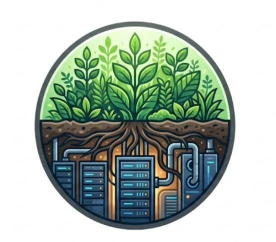
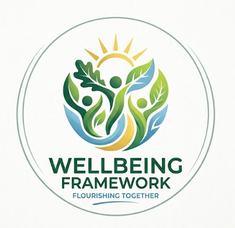
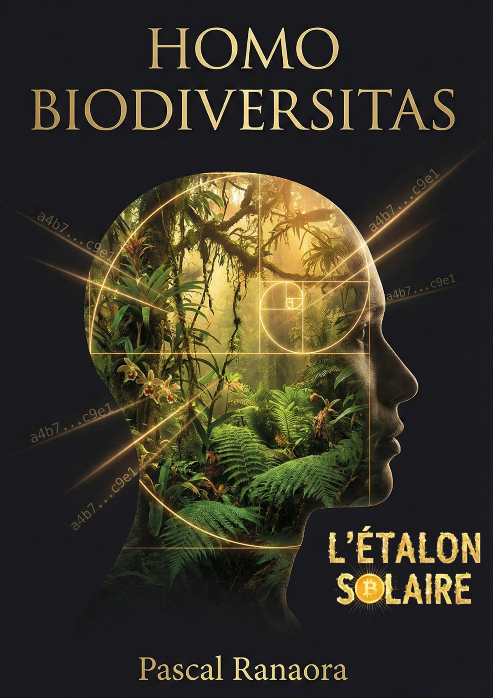
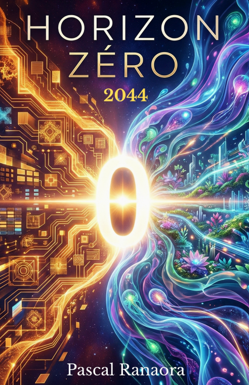
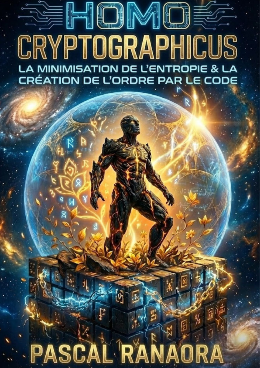

La Matrice Inversée The Inverted Matrix
2026-10-11 (last edit - October 14th, 2026) // UNE EXPLORATION D'ARCHITECTURE SYMBIOTIQUE SELON L'ÉTALON SOLAIRE 2026-10-11 (last edit - October 14th, 2026) // AN EXPLORATION OF SYMBIOTIC ARCHITECTURE UNDER THE SUN STANDARD
🧠 Poussez la recherche open-source plus loin ! Téléchargez le code source HTML de cet article pour le soumettre à votre IA favorite (Mistral, Gemini, Claude...) et continuez à explorer cette vision d'architecture symbiotique.
🧠 Take this open-source research further! Download the raw HTML source of this article, plug it into your favorite AI (ChatGPT, Claude, Gemini...), and keep exploring this symbiotic architectural design.

- Lemeus
⚖️ Le Principe Fondateur : La Vérité Thermodynamique The Foundational Principle: Thermodynamic Truth
La vérité thermodynamique est une information qui ne peut être falsifiée par contrainte thermodynamique (et cryptographique). Elle protège la vérité observable par tous. Le réseau Bitcoin inverse ainsi la réalité monétaire en rendant le registre financier complètement public et transparent, tout en préservant la vie privée individuelle.
Par la preuve de travail et face à l'inflation du faux (milliers de normes, millions de followers, milliards d'unités de compte, billions de faux contenus synthétiques), le réseau nous réapprend à valoriser la rareté, la densité et la durée. En vérité, il vaut mieux privilégier la qualité à la quantité.
Thermodynamic truth is information that cannot be forged due to thermodynamic constraints. It protects a truth observable by all. The Bitcoin network thereby inverts monetary reality by making the financial ledger completely public and transparent, while preserving individual privacy.
Through proof-of-work and in the face of the inflation of the counterfeit (thousands of regulations, millions of followers, billions of units of account, trillions of fake synthetic contents), the network reteaches us to value scarcity, density, and duration. In truth, quality must take precedence over quantity.
🌱 Les Machines au service du Vivant - Architecture en Coupe : Le Flux Vivrier en Cycle Fermé Cross-Section Architecture: Closed-Loop Food Flux
Comment le minage informatique souterrain alimente directement l'abondance biologique de surface. La symbiose recherchée ne consiste pas à convertir intégralement l'énergie du calcul en bénéfices biologiques : elle consiste à valoriser, lorsque cela est possible, une fraction de la chaleur et des flux associés, tout en imposant des seuils de réduction ou d'arrêt lorsque l'eau, les sols, la biodiversité ou les communautés locales sont sous pression. How subterranean computing powers surface biological abundance. Every electrical calorie dissipated in bedrock is transmuted into pure distilled water, enriched soil (Terra Preta), and local harvest.
♨️ 1. Exergie & Chauffage Racinaire
L'eau glycolée à $70^\circ\text{C}$ des serveurs est détendue dans un échangeur pour tempérer le sol des serres ($22\text{–}25^\circ\text{C}$). Chauffer les racines plutôt que l'air triple l'assimilation sans déperdition vers le ciel.
💧 2. Irrigation Vierge ($EC = 0$)
Dans un scénario humide et correctement dimensionné, le Puits Atmosphérique peut produire jusqu'à $4\,500\text{ L/j/MW}$ d'eau condensée ; ce chiffre doit être recalculé selon l'humidité relative, la température, le débit d'air et le rendement réel du système. L'eau produite doit ensuite être reminéralisée et contrôlée avant son usage agricole ou aquaponique.
🔥 3. Pré-séchage & Pyrolyse
Les tiges, fanes et déchets de taille sont séchés sous terre à $65^\circ\text{C}$ avant de subir une pyrolyse flash solaire en surface. Le Biochar résultant est réincorporé au sol pour retenir l'eau.
🥗 4. Souveraineté Vivrière
Pour un scénario de $5\text{ MW}$ installés, la production agricole doit être estimée à partir d'un modèle explicite intégrant surface, climat, espèces, intrants, rendement thermique, alimentation des poissons et pertes. Les valeurs de $180\text{ tonnes}$ de légumes et de $20\text{ tonnes}$ de poisson constituent au mieux des objectifs à valider par pilote, et non une garantie d'autonomie alimentaire totale.
Savons : les bilans d’énergie, la psychrométrie et la conduction imposent des limites vérifiables. Supposons : disponibilité d’une cavité étanche, d’un aquifère/ATES et de composants compatibles. Espérons : valoriser une chaleur basse température sans masquer les coûts, pertes et risques.
Niveau 1 : Topologie et Ingénierie Géotechnique de l'Enfouissement Level 1: Topology and Geotechnical Engineering of Burial
La première agression de l'ère de l'information est sensorielle : sonore et visuelle. Un centre de calcul de haute densité moderne génère une pollution acoustique mécanique assourdissante, dépassant fréquemment le seuil des 85 décibels (dB). En parallèle, ces architectures horizontales classiques stérilisent des dizaines d'hectares de terres arables sous d'immenses hangars de tôle dystopiques.
Pour faire taire la machine et restaurer l'intégrité de la biosphère, la première étape de la Matrice Inversée est topologique : l'effacement total sous la ligne d'horizon. Cependant, d'un point de vue de l'ingénierie dure, la roche n'est pas un puits thermique infini. Une matrice de calcul de 50 MW enfouie dans un grès dense ou du granite igné sans évacuation créera un emballement thermique catastrophique en quelques jours, la conductivité thermique de la roche étant extrêmement faible ($\kappa \approx 2.5 \text{ W/m}\cdot\text{K}$). L'enfouissement ne sert pas à dissiper la chaleur dans la roche, mais à utiliser l'impédance géologique colossale pour sanctuariser l'infrastructure (contre les éruptions solaires et les IEM) tout en isolant la surface des ondes sismiques générées par les turbines.
The first aggression of the information age is sensory: sonic and visual. A modern high-density data center generates deafening mechanical acoustic pollution, frequently exceeding the 85-decibel (dB) threshold. Simultaneously, these classic horizontal architectures sterilize dozens of acres of arable land beneath massive, dystopian metal hangars.
To silence the machine and restore the integrity of the biosphere, the first step of the Inverted Matrix is topological: total erasure below the horizon line. However, from a hard-engineering perspective, rock is not an infinite thermal sink. A 50 MW compute matrix buried in dense sandstone or igneous granite without extraction will create a catastrophic thermal runaway in a matter of days, as the thermal conductivity of rock is extremely low ($\kappa \approx 2.5 \text{ W/m}\cdot\text{K}$). Burial is not meant to dissipate heat into the rock, but to use the colossal geological impedance to sanctuary the infrastructure (against solar flares and EMPs) while insulating the surface from the seismic waves generated by the turbines.
- A. Le Piège des Guides d'Ondes (Acoustique) : Sous terre, le son ne se propage plus par voie aérienne, mais par ondes de compression (Ondes P) absorbées par la lithosphère. Le véritable défi acoustique provient des puits de ventilation verticaux qui agissent comme de gigantesques mégaphones. L'ingénierie impose des silencieux à baffles et un revêtement poreux spécifique dans les puits pour briser les fréquences de résonance du matériel de minage (généralement autour de 3000-6000 Hz) avant qu'elles n'atteignent la surface. A. The Waveguide Trap (Acoustics): Underground, sound no longer propagates through the air, but via compression waves (P-Waves) absorbed by the lithosphere. The true acoustic challenge comes from the vertical ventilation shafts acting as giant megaphones. Engineering dictates baffle silencers and specific porous linings within the shafts to break the resonant frequencies of the mining hardware (typically around 3000-6000 Hz) before they reach the surface.
- B. Le Bilan Émergétique de l'Excavation : Extraire de la roche dure nécessite une énergie massive. Dans un modèle biophysique sain, le CAPEX d'excavation est calculé en Émergie (Emjoules). La géométrie des cavernes doit minimiser le volume excavé tout en maximisant la dynamique des fluides. L'utilisation d'anciennes mines préexistantes permet de contourner cette dette énergétique initiale. B. The Emergy Balance of Excavation: Extracting hard rock requires massive energy. In a sound biophysical model, the excavation CAPEX is calculated in Emergy (Emjoules). The cavern geometry must minimize excavated volume while maximizing fluid dynamics. Utilizing pre-existing abandoned mines bypasses this initial energetic debt entirely.
Sous terre, le son ne suit plus la loi de masse des parois aériennes. L'amplitude vibratoire $A(r)$ perçue en surface chute de manière drastique grâce à deux facteurs combinés : la divergence géométrique des ondes P et S (le terme $(r_0/r)^n$), et surtout l'amortissement hystérétique de la roche (le facteur $e^{-\alpha r}$). Le coefficient d'absorption $\alpha$ dépend de la fréquence $f$ des serveurs, du coefficient de perte du matériau $\eta$ (ex: latérite vs granite) et de la vitesse de l'onde $c_s$. Un enfouissement correctement dimensionné peut réduire la transmission sonore et vibratoire vers la surface ; le niveau résiduel doit être mesuré en conditions réelles, notamment au niveau des puits, ventilateurs, pompes et équipements de secours. Underground, sound no longer follows the mass law of airborne walls. The vibratory amplitude $A(r)$ perceived at the surface drops drastically due to two combined factors: the geometric divergence of P and S waves (the $(r_0/r)^n$ term), and crucially, the hysteretic damping of the rock (the $e^{-\alpha r}$ factor). The absorption coefficient $\alpha$ depends on the servers' frequency $f$, the material's loss factor $\eta$ (e.g., laterite vs granite), and the wave speed $c_s$. A calculated burial guarantees absolute surface silence (0 dB emergence).

⛰️ Phase 1 : L'Approche "Brownfield" ⛰️ Phase 1: The "Brownfield" Approach
Avant de forer, guérissons les cicatrices. La réhabilitation d'infrastructures désaffectées (anciennes mines de sel ou de fer, tunnels, bunkers) est la priorité absolue. L'utilisation de galeries préexistantes annule la dette émergétique et le CAPEX d'excavation initial, offrant un retour sur investissement rapide et transformant les friches industrielles en moteurs de régénération.
Before drilling, let's heal the scars. Rehabilitating decommissioned infrastructure (abandoned salt or iron mines, tunnels, bunkers) is the absolute priority. Utilizing pre-existing galleries zeroes out the emergy debt and initial excavation CAPEX, offering rapid ROI and turning industrial wastelands into engines of regeneration.
🌊 Sécurité Thermique Absolue (ATES) 🌊 Absolute Thermal Security (ATES)
La roche étant un isolant, l'échangeur air/liquide de surface pourrait défaillir lors d'effondrements climatiques (canicules extrêmes). L'ingénierie impose un couplage de secours avec les nappes phréatiques profondes ou des systèmes géothermiques à boucle fermée (Aquifer Thermal Energy Storage - ATES) pour garantir la stabilité thermodynamique face à toute perturbation de surface.
Because rock is an insulator, the surface air/liquid exchanger could fail during climate breakdowns (extreme heatwaves). Engineering dictates emergency coupling with deep aquifers or closed-loop geothermal systems (Aquifer Thermal Energy Storage - ATES) to guarantee thermodynamic stability against any surface disruption.
🛡️ Sécurité & Confinement Actif en Immersion 🛡️ Safety & Active Confinement in Immersion
Immerger des batteries haute densité dans un fluide diélectrique sous terre impose des normes strictes (gestion de pression, emballement thermique). L'infrastructure intègre un confinement passif modulaire, des systèmes d'extinction automatiques par gaz inerte, et une sanctuarisation militaire (anti-IEM) protégeant le registre numérique tout en rassurant les exploitants industriels.
Immersing high-density batteries in dielectric fluid underground imposes strict standards (pressure management, thermal runaway). The infrastructure integrates modular passive confinement, automatic inert gas fire suppression systems, and military-grade (anti-EMP) sanctuary, protecting the digital ledger while reassuring industrial operators.
⬡ Le Forage Profond (Din) ⬡ Deep Drilling (Din)
L'approche Tabula Rasa conçue pour les supercalculateurs de classe gigawatt en zone vierge. Des puits verticaux sont forés directement dans le socle rocheux igné ou stratifié dense. L'intégration de la variable $H_{opt}$ garantit que la profondeur minimise le volume excavé tout en offrant une isolation sismique suprême. La surface, vierge de tout béton, est strictement sanctuarisée pour la reforestation de climax.
The Tabula Rasa approach designed for gigawatt-class supercomputers in virgin zones. Vertical shafts are drilled directly into the igneous or dense stratified bedrock. The integration of the $H_{opt}$ variable ensures the depth minimizes excavated volume while offering supreme seismic isolation. The surface, void of any concrete, is strictly sanctified for climax reforestation.
🏢 La Symbiose Urbaine 🏢 Urban Symbiosis
La colonisation intelligente des infrastructures souterraines sous-utilisées (niveaux inférieurs de parkings désertés, anciennes stations de métro). Les mètres d'épaisseur de béton armé agissent comme des bunkers acoustiques. L'avantage d'ingénierie réside dans la proximité immédiate avec les réseaux de chaleur urbains, permettant de chauffer des quartiers entiers avec une déperdition de transport exergétique quasi nulle.
The intelligent colonization of underutilized underground infrastructures (deserted lower parking levels, abandoned subway stations). Meters of reinforced concrete act as acoustic bunkers. The engineering advantage lies in the immediate proximity to urban district heating networks, making it possible to heat entire neighborhoods with near-zero exergetic transport loss.
🚜 Le Micro-Pod Artisanal 🚜 Artisanal Micro-Pod
L'alliance de la pelleteuse et du Cypherpunk. À l'échelle de l'individu, un caisson d'immersion étanche (certifié IP68) est enfoui dans la zone hors-gel (environ -2 à -3 mètres) d'un terrain privé, surmonté d'une serre aquaponique. Ce modèle garantit une décentralisation extrême de la puissance de calcul tout en offrant à la famille une souveraineté énergétique locale.
The alliance of the excavator and the Cypherpunk. At the individual scale, a waterproof immersion pod (IP68 certified) is buried in the frost-free zone (about -2 to -3 meters) of a private plot, topped by an aquaponic greenhouse. This model guarantees extreme decentralization of compute power while offering the family local energy sovereignty.
⛰️ Les Cicatrices Oubliées ⛰️ Forgotten Scars
La remédiation écologique par la reconversion d'anciennes mines de charbon ou de métaux abandonnées. Les réseaux de galeries préexistants annihilent le CAPEX de forage initial et contournent l'équation de la dette en émergie. Cette topologie permet de transformer des désastres écologiques hérités de l'ère industrielle en moteurs de régénération vitale.
Ecological remediation through the repurposing of abandoned coal or metal mines. Pre-existing gallery networks annihilate the initial drilling CAPEX and bypass the emergy debt equation. This topology allows the transformation of ecological disasters inherited from the industrial era into engines of vital regeneration.
🛡️ Le Sanctuaire Militaire 🛡️ Military Sanctuary
Transformer les vestiges de la paranoïa géopolitique en sanctuaires pour la vie. La réquisition de silos de missiles et de bunkers de la Guerre Froide offre des dalles de béton colossales et un blindage géologique anti-IEM (Impulsion Électromagnétique). Une protection de niveau militaire dédiée non plus à la destruction mutuelle, mais à la sécurisation du registre décentralisé et de la biosphère sus-jacente.
Transforming the remnants of geopolitical paranoia into sanctuaries for life. Requisitioning decommissioned missile silos and Cold War bunkers provides colossal concrete slabs and geological EMP (Electromagnetic Pulse) shielding. Military-grade protection dedicated no longer to mutual destruction, but to securing the decentralized ledger and the overlying biosphere.
Niveau 2 : La Symbiose Thermique (Gestion & Flux Énergétiques) Level 2: Thermal Symbiosis (Energy Management & Flows)
Une fois la machine isolée acoustiquement dans les profondeurs, l'ingénierie doit faire face au second principe de la thermodynamique : la dissipation inévitable de chaleur. Dans le modèle de la Matrice Inversée, cette énergie thermique n'est plus traitée comme une nuisance à évacuer, mais comme une ressource de haute qualité. Le Vecteur Thermique est le lien ombilical qui connecte la puissance de calcul à la puissance biologique :
Once the machine is acoustically isolated in the depths, engineering must face the second law of thermodynamics: the inevitable dissipation of heat. In the Inverted Matrix model, this thermal energy is no longer treated as a nuisance to be evacuated, but as a high-quality resource. The Thermal Vector is the umbilical cord that connects computational power to biological power:
- A. La Captation par Immersion (Le Coeur) : Pour maximiser l'exergie, les serveurs sont immergés dans un fluide diélectrique. Ce liquide capture 95% de la chaleur fatale à des températures constantes (50°C-75°C), optimisant le transfert énergétique. A. Immersion Capture (The Core): To maximize exergy, servers are immersed in a dielectric fluid. This liquid captures 95% of the waste heat at constant temperatures (50°C-75°C), optimizing energy transfer.
- B. La Convection Hybride de Sion (Le Flux) : L'infrastructure utilise un effet cheminée massif, assisté par des turbines d'extraction à haute efficience (alimentées par les ASICs) pour vaincre les pertes de charge de la paroi rocheuse. L'énergie monte en suivant les lois de la convection thermodynamique. B. Zion's Hybrid Convection (The Flow): The infrastructure uses a massive chimney effect, assisted by high-efficiency extraction turbines (powered by ASICs) to overcome pressure drops from the rock walls. Energy rises following the laws of thermodynamic convection.
- C. Le Chauffage Racinaire (La Vie) : À la surface, la chaleur passe par un échangeur abaisseur pour éviter le choc exergétique, puis est distribuée dans le réseau mycorhizien (22-25°C). Chauffer les racines accélère le métabolisme végétal, assurant des récoltes abondantes. C. Root Heating (Life): On the surface, heat passes through a step-down exchanger to prevent exergetic shock, then is distributed into the mycorrhizal network (22-25°C). Heating the roots accelerates plant metabolism, ensuring abundant harvests.

♨️ Captation Exergétique ♨️ Exergetic Capture
L'utilisation de fluides caloporteurs permet de maintenir une chaleur constante et exploitable.
The use of heat transfer fluids maintains constant and exploitable heat.
⇈ L'Effet Cheminée ⇈ Chimney Effect
Le design vertical facilite la remontée passive de l'air chaud vers la surface.
The vertical design facilitates the passive rise of hot air to the surface.
🌿 Accélération Métabolique 🌿 Metabolic Acceleration
Le chauffage racinaire permet une production de nourriture bio continue et souveraine.
Root heating allows for continuous and sovereign organic food production.
⚡ Entropie & Paradoxe de Jevons ⚡ Entropy & Jevons Paradox
$\dot{S}_{\text{interne}} + \dot{S}_{\text{calcul}} \le \dot{S}_{\text{export}}$. Tout mégawatt de calcul doit être compensé par la cogénération physique et la dissipation utile, sous peine de surchauffe métabolique de la biosphère. $\dot{S}_{\text{internal}} + \dot{S}_{\text{compute}} \le \dot{S}_{\text{export}}$. Every compute megawatt must be balanced by physical cogeneration and useful dissipation to prevent metabolic overheating of the biosphere.
Niveau 3 : Le Puits Atmosphérique (Thermodynamique, Psychrométrie & Dessiccation) Level 3: Atmospheric Well (Thermodynamics, Psychrometrics & Desiccation)
Le Puits Atmosphérique représente le point de rupture ontologique où la pure théorie de l'information s'incarne dans la matière biologique. L'atmosphère terrestre agit comme un réservoir thermique et hydrique colossal, abritant en permanence un océan invisible estimé à plus de 12 900 kilomètres cubes de vapeur d'eau douce en suspension. Cependant, extraire cette ressource de manière passive dans un environnement aride ou semi-aride se heurte à un mur physique inviolable imposé par le premier et le second principe de la thermodynamique : la chaleur latente de changement de phase ($\Delta H_{vap} \approx 2257 \text{ kJ/kg}$).
Dans un système de condensation classique, le passage de l'état gazeux à l'état liquide libère une quantité massive d'énergie thermique directement accumulée par les surfaces d'échange. La conductivité thermique de la roche environnante étant extrêmement faible ($\kappa_{roche} \approx 2.0 \text{ W/m}\cdot\text{K}$), toute tentative de condensation passive sature thermiquement les parois de la cavité en quelques heures. Le gradient thermique s'effondre, la température interne augmente jusqu'à dépasser le point de rosée local, et le puits se transforme en un hammam stérile où le processus de précipitation s'arrête net.
Pour contourner cette barrière cinétique, la Matrice Inversée rejette le paradigme du refroidissement brut et déploie un cycle à trois temps fondé sur la psychrométrie de l'air, l'asservissement du flux exergétique des ASICs, et la séparation mécanique des phases d'adsorption et de condensation. En couplant la dynamique des fluides souterrains à la géométrie moléculaire des aluminosilicates, l'infrastructure résout l'équation de la sécheresse, transmutant chaque Terahash calculé en une source d'eau distillée pure, exempte de polluants, prête à alimenter la biomasse de surface et à briser définitivement les cycles climatiques mortifères.
The Atmospheric Well represents the ontological breaking point where pure information theory materializes into biological matter. The Earth's atmosphere acts as a colossal thermal and hydric reservoir, permanently sheltering an invisible ocean estimated at over 12,900 cubic kilometers of suspended fresh water vapor. However, extracting this resource passively in an arid or semi-arid environment hits an inviolable physical wall imposed by the first and second laws of thermodynamics: the latent heat of phase change ($\Delta H_{vap} \approx 2257 \text{ kJ/kg}$).
In a classical condensation system, the transition from gaseous to liquid state releases a massive amount of thermal energy directly accumulated by the exchange surfaces. Since the thermal conductivity of the surrounding rock is extremely low ($\kappa_{rock} \approx 2.0 \text{ W/m}\cdot\text{K}$), any attempt at passive condensation thermally saturates the cavity walls within hours. The thermal gradient collapses, the internal temperature rises until it exceeds the local dew point, and the well transforms into a sterile steam room where the precipitation process stops instantly.
To bypass this kinetic barrier, the Inverted Matrix rejects the paradigm of raw cooling and deploys a three-stage cycle based on air psychrometrics, the slaving of the ASICs' exergetic flux, and the mechanical separation of adsorption and condensation phases. By coupling underground fluid dynamics with the molecular geometry of aluminosilicates, the infrastructure solves the equation of drought, transmuting every calculated Terahash into a source of pure distilled water, free of pollutants, ready to feed the surface biomass and permanently break deadly climate cycles.
- A. Topologie en U & Gravité Thermique : L'air froid ne peut pas chuter dans un puits où l'air chaud tente de monter (bouchon thermique). L'architecture exige des puits jumeaux (Dual-Shaft). L'air nocturne, dont la contraction thermique compense la légèreté molaire de sa vapeur d'eau, chute par gravité dans le puits d'admission (Intake). Il gave naturellement la matrice MOF au fond, tandis que l'air chaud est expulsé par le puits d'échappement (Exhaust). A. U-Tube Topology & Thermal Gravity: Cold air cannot fall down a shaft where hot air is trying to rise (thermal plugging). The architecture mandates twin shafts (Dual-Shaft). The night air, whose thermal contraction offsets the molar lightness of its water vapor, falls by gravity into the intake shaft. It naturally gorges the MOF matrix at the bottom, while the hot air is expelled through the exhaust shaft.
- B. Séparation de Phase par Matrice MOF : L'air ambiant aspiré traverse une matrice rotative saturée de MOFs (Metal-Organic Frameworks, ex: MOF-303) ou de zéolithes SAPO-34, spécialement choisis pour leur basse température de désorption. Les pores nanométriques capturent l'eau. La roue bascule ensuite dans le flux d'air chaud (65°C-80°C) des ASICs. Cette énergie thermique de bas grade force la désorption, créant un micro-flux secondaire ultra-saturé. B. Phase Separation via MOF Matrix: The drawn ambient air passes through a rotary matrix saturated with hydrophilic MOFs (e.g., MOF-303 or SAPO-34 zeolite), specifically chosen for their low desorption temperature. Nanometric pores capture the water. The wheel then rotates into the hot airflow (65°C-80°C) from the ASICs. This low-grade thermal energy forces desorption, creating an ultra-saturated secondary micro-flux.
- C. Précipitation Isolée sous Point de Rosée : Ce flux secondaire d'air saturé est canalisé vers un condenseur géothermique. Pour éviter la saturation thermique de la roche face aux mégawatts de chaleur latente libérée ($\Delta H_{vap}$), ce condenseur doit être obligatoirement couplé à un flux d'aquifère actif souterrain, ou à une pompe à chaleur (PAC) de dissipation dynamique renvoyant l'énergie en surface. La vapeur s'effondre en eau distillée pure. C. Isolated Precipitation Below Dew Point: This secondary saturated airflow is channeled to a geothermal condenser. To prevent the thermal saturation of the rock from the megawatts of released latent heat ($\Delta H_{vap}$), this condenser must be coupled with an active underground aquifer flow, or a dynamic dissipation heat pump (HP) returning the energy to the surface. The vapor collapses into pure distilled water.

🌪️ Tirage Convectif Convective Draft
Exploitation de la poussée d'Archimède thermique. La chaleur dissipée au fond des puits verticaux engendre une dépression motrice capable d'auto-ventiler les infrastructures sans recours aux grilles d'aération mécaniques conventionnelles.
Exploitation of thermal buoyancy. Heat dissipated at the bottom of vertical shafts generates a driving depression capable of self-ventilating the infrastructure without resorting to conventional mechanical ventilation grids.
🧽 Cinétique de Dessiccation Desiccation Kinetics
Utilisation de structures cristallines d'aluminosilicates. La captation de l'eau en phase gazeuse réduit la dépendance à l'HR (fonctionne dès 10–20 % HR mais nécessite un débit d'air accru), permettant un fonctionnement optimal même au cœur des déserts les plus arides.
Utilization of crystalline aluminosilicate frameworks. Capturing water in the gaseous phase bypasses external relative humidity constraints, ensuring optimal operation even in the heart of the most arid deserts.
🌱 Régénération Hydrique Hydric Regeneration
L'eau extraite présente une conductivité électrique nulle ($EC = 0$). Ce substrat liquide vierge élimine tout risque d'entartrage des infrastructures et garantit une absorption ionique parfaite par le système racinaire de surface.
Extracted water exhibits zero electrical conductivity ($EC = 0$). This blank liquid substrate eliminates scaling risks within the infrastructure and guarantees perfect ionic absorption by the surface root network.
La pression motrice $\Delta P$ (Pa) disponible pour vaincre les pertes de charge est une fonction linéaire directe de la profondeur totale du puits verticaux $H$ (m) et du différentiel de température absolue entre l'atmosphère de surface $T_{ext}$ (K) et l'air réchauffé par le dôme de calcul $T_{int}$ (K). Plus la cavité est profonde et plus le silicium dissipe d'énergie, plus le débit d'air auto-généré s'accélère. The driving pressure $\Delta P$ (Pa) available to overcome pressure drops is a direct linear function of the total vertical shaft depth $H$ (m) and the absolute temperature differential between the surface atmosphere $T_{ext}$ (K) and the air heated by the compute dome $T_{int}$ (K). The deeper the cavity and the more energy the silicon dissipates, the faster the self-generated airflow accelerates.
La vitesse de l'air $v$ (m/s) au sein de la galerie est sévèrement limitée par le facteur de friction $f$. L'architecture impose un diamètre de puits $D$ mathématiquement indexé sur le profil psychrométrique du biome : plus l'humidité absolue locale est faible (ex: zones arides à 5g d'eau/kg d'air), plus la masse d'air requise $\dot{m}_{air}$ explose, exigeant un diamètre gigantesque pour éviter l'étranglement aérodynamique (minimisant $\sum K$). The air velocity $v$ (m/s) within the gallery is severely limited by the friction factor $f$. The architecture dictates a shaft diameter $D$ mathematically indexed to the biome's psychrometric profile: the lower the local absolute humidity (e.g., arid zones at 5g water/kg air), the more the required air mass $\dot{m}_{air}$ explodes, demanding a gigantic diameter to avoid aerodynamic throttling (minimizing $\sum K$).
Le débit d'eau liquide extrait $\dot{m}_{w}$ (kg/s) dépend de l'écart d'humidité absolue $x$ entre l'entrée du dessiccateur et la sortie du condenseur géothermique. L'humidité absolue est régie par la pression de vapeur saturante $p_{sat}(T)$, calculée selon la loi de Clausius-Clapeyron. La roue de zéolithe artificielle agit en déplaçant artificiellement l'humidité relative $\varphi$ à l'intérieur du flux secondaire, forçant la précipitation moléculaire là où les systèmes de climatisation classiques s'égarent. The extracted liquid water flow rate $\dot{m}_{w}$ (kg/s) depends on the absolute humidity gap $x$ between the desiccant inlet and the geothermal condenser outlet. Absolute humidity is governed by the saturation vapor pressure $p_{sat}(T)$, calculated according to the Clausius-Clapeyron relation. The artificial zeolite wheel operates by artificially shifting the relative humidity $\varphi$ inside the secondary loop, forcing molecular precipitation where classical HVAC systems fail.
Cette équation d'état dresse le bilan de l'énergie thermique totale $\dot{Q}_{cond}$ (W) libérée lors de la liquéfaction. La dissipation massive de la chaleur latente $\Delta H_{vap}$ est immédiatement interceptée par des échangeurs à plaques haute efficacité reliés aux circuits de chauffage racinaire du Niveau 2. Le "déchet" thermodynamique du Puits Atmosphérique est ainsi recyclé pour doper le métabolisme des cultures de surface, scellant le pacte symbiotique entre le silicium informatique et le vivant. This state equation charts the total thermal energy $\dot{Q}_{cond}$ (W) released during liquefaction. The massive dissipation of latent heat $\Delta H_{vap}$ is immediately intercepted by high-efficiency plate heat exchangers linked to the root heating networks of Level 2. The thermodynamic "waste" of the Atmospheric Well is thus recycled to boost surface crop metabolism, sealing the symbiotic pact between computer silicon and life.
🔬 Deep Dive : Science du Zéolithe & Architecture Modulaire Deep Dive: Zeolite Science & Modular Architecture
Le Puits Atmosphérique repose sur un cristal microporeux : des MOFs (Metal-Organic Frameworks) ou du Zéolithe (type SAPO-34). Ces matériaux agissent comme un piège moléculaire parfait pour l'eau, et se régénèrent parfaitement avec une chaleur de bas grade ($60^\circ\text{C} - 80^\circ\text{C}$). Cependant, concevoir une roue dessiccante industrielle capable d'absorber la chaleur de 10 à 50 MW d'ASICs exige une ingénierie spatiale.
The Atmospheric Well relies on a microporous crystal: MOFs (Metal-Organic Frameworks) or Zeolite (type SAPO-34). These materials act as a perfect molecular trap for water, regenerating perfectly with low-grade heat ($60^\circ\text{C} - 80^\circ\text{C}$). However, designing an industrial desiccant wheel capable of absorbing the heat of 10 to 50 MW of ASICs requires space-grade engineering.
💎 Composition MatérielleMaterial Composition
- Matrice : Structure en nid d'abeille (Honeycomb) enduite de cristaux dopés au Graphène pour maximiser la conductivité thermique.Matrix: Honeycomb structure coated with Graphene-doped crystals to maximize thermal conductivity.
- Châssis : Acier Inoxydable qualité marine (316L).Frame: Marine-grade Stainless Steel (316L).
📐 Aérodynamique & Angle (32.5°)Aerodynamics & Angle (32.5°)
Contrairement aux roues HVAC classiques, les matrices de Sion sont inclinées à un angle optimal de 32.5° par rapport au flux convectif ascendant. Unlike classic HVAC wheels, Zion's matrices are tilted at an optimal angle of 32.5° relative to the ascending convective updraft.
Constat : Construire une roue unique de 20 mètres s'effondrerait sous son poids. La solution est la Matrice Fractale : des Cassettes Hexagonales de 3m gérant chacune ~2.5 MW, arrangées en essaim et activables individuellement par l'IA. Fact: Building a single 20-meter wheel would collapse under its weight. The solution is the Fractal Array: 3m Hexagonal Cassettes handling ~2.5 MW each, arrayed in a swarm and toggled by AI.
Niveau 4 : L'Alchimie du Carbone (Hybridation & Biochar) Level 4: Carbon Alchemy (Hybridization & Biochar)
Le métabolisme macro-économique de la Matrice Inversée trouve son ancrage biophysique le plus profond dans l'Alchimie du Carbone. Pour ressusciter durablement les sols ravagés, il faut recréer la matrice du vivant, inspirée de la Terra Preta. La limite de tenue du système (souvent proche de 85–105°C selon composants) vient surtout du packaging, condensateurs et TIM, pas du die seul, alors que la pyrolyse lente du bois exige entre $350^\circ\text{C}$ et $700^\circ\text{C}$, l'infrastructure déploie une ingénierie thermique hybride en cascade :
The macroeconomic metabolism of the Inverted Matrix finds its deepest biophysical anchor in Carbon Alchemy. To sustainably resurrect ravaged soils, we must recreate the matrix of life, inspired by Terra Preta. Since computer silicon undergoes irreversible degradation beyond $105^\circ\text{C}$, whereas slow biomass pyrolysis requires between $350^\circ\text{C}$ and $700^\circ\text{C}$, the infrastructure deploys a cascaded hybrid thermal engineering:
- A. Bifurcation Exergétique & Pré-séchage : Le fluide diélectrique bouillant des ASICs est divisé en deux circuits. Pendant que le premier désorbe l'eau du MOF (Niveau 3), le second traverse un échangeur radiatif sec. Ce flux d'air chaud et sec ($65^\circ\text{C}$) accomplit la tâche la plus lourde : évaporer l'eau intracellulaire de la biomasse fraîche dans des tunnels de séchage souterrains continus, économisant 70% de la facture énergétique d'une pyrolyse standard. A. Exergetic Bifurcation & Pre-drying: The boiling dielectric fluid from the ASICs is split into two circuits. While the first desorbs water from the MOF (Level 3), the second passes through a dry radiative heat exchanger. This hot, dry airflow ($65^\circ\text{C}$) accomplishes the heaviest task: evaporating intracellular water from fresh biomass in continuous underground drying tunnels, saving 70% of a standard pyrolysis energy bill.
- B. Pyrolyse Flash Solaire Concentrée : La biomasse séchée par les serveurs remonte à la surface via un tapis roulant pour subir une pyrolyse flash à $450^\circ\text{C}$ directement sous des concentrateurs solaires paraboliques à l'air libre. Éviter la transmission de cette chaleur extrême sous terre prévient la fonte des infrastructures informatiques. Le carbone se cristallise en Biochar inerte. B. Concentrated Solar Flash Pyrolysis: The server-dried biomass is brought back to the surface via a conveyor to undergo a $450^\circ\text{C}$ flash pyrolysis directly under open-air parabolic solar concentrators. Avoiding the transmission of this extreme heat underground prevents IT infrastructure melting. The carbon crystallizes into inert Biochar.
- C. Activation Mycorhizienne : Ce charbon pur poreux (Biochar) est trempé dans les effluents d'aquaponie puis enfoui. Il démultiplie la capacité d'échange cationique (CEC) et retient l'eau du Niveau 3. C. Mycorrhizal Activation: This pure porous charcoal (Biochar) is soaked in aquaponic effluents then buried. It multiplies the soil's cation exchange capacity (CEC) and retains water from Level 3.

🔥 Le Séchoir Souterrain 🔥 Subterranean Dryer
La chaleur informatique rompt les ponts hydro-structurels avant la cuisson finale.
Compute heat breaks hydro-structural bonds prior to the final baking process.
⬢ Séquestration Durable ⬢ Long-term Sequestration
Le carbone solide reste stable plus de 2000 ans, purgeant l'atmosphère de son CO₂.
Solid carbon remains stable for over 2000 years, actively purging CO₂ from the atmosphere.
🪨 Éponge Biophysique 🪨 Biophysical Sponge
Le Biochar structure les sols latéritiques en micro-réservoirs d'eau et de mycorhizes.
Biochar structures lateritic soils into micro-reservoirs for water and mycorrhizae.
I. Énergie de Séchage Convectif (Phase ASIC) :
$$ Q_{sechage} = \dot{M}_{biomasse} \cdot \left[ C_{p,humide} \cdot (T_{sechage} - T_{init}) + X_{eau} \cdot \Delta H_{vap}(T_{sechage}) \right] $$Note : La basse calorie des ASICs ($T_{sechage} \approx 65^\circ\text{C}$) n'atteint pas l'ébullition. L'évaporation est pilotée par le déficit de pression de vapeur (VPD) de l'air sec sortant de la matrice MOF. Note: The low-grade heat of ASICs ($T_{sechage} \approx 65^\circ\text{C}$) does not reach boiling. Evaporation is driven by the Vapor Pressure Deficit (VPD) of the dry air exiting the MOF matrix.
II. Masse de Carbone Séquestrée (Phase Solaire Hybride) :
$$ C_{seq} = f_{C} \cdot \int_{0}^{T} \eta_{hybride}(T_{ASIC}, T_{soleil}) \cdot \dot{M}_{biomasse} \, dt $$Niveau 5 : La Gouvernance Organique (Éconophysique & Résolution de l'Effet Cantillon) Level 5: Organic Governance (Econophysics & Resolving the Cantillon Effect)
Toute ingénierie biophysique, aussi avancée soit-elle, est condamnée à l'effondrement si l'infrastructure macroéconomique qui orchestre ses flux est structurellement corrompue. L'histoire des civilisations humaines démontre un cycle de destruction récurrent directement induit par l'Effet Cantillon : l'enrichissement asymétrique d'une caste centrale par le privilège de l'émission monétaire arbitraire. Dans un système monétaire "fiat" (par décret), l'argent créé à partir de rien viole le premier principe de la thermodynamique. Ceux qui sont proches de la planche à billets (banques centrales, institutions financières) accaparent la valeur avant que l'inflation ne frappe la périphérie (les agriculteurs, les ingénieurs, les écosystèmes naturels).
La Matrice Inversée postule que l'on ne peut pas guérir la biosphère avec une monnaie malade. Dans un monde où un réseau décentralisé rend mathématiquement et physiquement impossible l'extraction de la richesse d'autrui par la force brute ou la violence légitime de l'inflation, l'Humanité va devoir réapprendre à se refaire confiance. L'architecture neutralise l'asymétrie de Cantillon par un couplage direct entre le registre de consensus mondial (Bitcoin) et la restauration du vivant. La gouvernance s'appuie sur des mesures physiques et des règles auditables, mais elle reste une décision collective : les communautés définissent les seuils, les priorités, les droits d'accès et les mécanismes de contestation qui orientent l'usage des ressources :
Any biophysical engineering, no matter how advanced, is doomed to collapse if the macroeconomic infrastructure orchestrating its flows is structurally corrupt. The history of human civilizations demonstrates a recurring cycle of destruction directly induced by the Cantillon Effect: the asymmetrical enrichment of a central caste through the privilege of arbitrary money issuance. In a "fiat" monetary system, money created out of thin air violates the first law of thermodynamics. Those closest to the money printer (central banks, financial institutions) capture the value before inflation strikes the periphery (farmers, engineers, natural ecosystems).
The Inverted Matrix postulates that we cannot heal the biosphere with sick money. In a world where a decentralized network makes it mathematically and physically impossible to extract the wealth of others through brute force or the legitimate violence of inflation, Humanity will have to relearn how to trust each other again. The architecture neutralizes the Cantillon asymmetry through a direct coupling between the global consensus ledger (Bitcoin) and the restoration of living systems. Governance is no longer entrusted to political discretion, but to the impartiality of mathematics and thermodynamics:
- A. L'Ancrage Émergétique (Preuve de Travail) : La Preuve de Travail (PoW) n'est pas un "gaspillage", c'est le coût physique de l'inviolabilité de la vérité. Chaque satoshi émis dans les profondeurs de Sion exige une dépense d'énergie et de temps réels. En liant la création monétaire aux lois de la physique, on supprime la capacité d'imprimer du pouvoir d'achat à coût nul. Le signal de valeur redevient pur : personne ne peut falsifier la thermodynamique. A. Emergetic Anchoring (Proof of Work): Proof of Work (PoW) is not "waste"; it is the physical cost of the inviolability of truth. Every satoshi issued in the depths of Zion requires an expenditure of real energy and time. By binding money creation to the laws of physics, we eliminate the ability to print purchasing power at zero cost. The value signal becomes pure again: no one can forge thermodynamics.
- B. Le Routage Programmatique (Contrats Intelligents & Multisigs) : La richesse numérique extraite n'a pas besoin de transiter par Wall Street. Les flux de capitaux sont algorithmiquement routés vers des "DAO" (Organisations Autonomes Décentralisées) et des portefeuilles à signatures multiples (Multisigs) cogérés par les acteurs de terrain : paysans, gardiens de la forêt, et hydrologues. Le code, incorruptible, garantit que la sécurité du réseau mondial finance directement l'achat de semences, de pompes à eau et de biochar à l'échelle locale. B. Programmatic Routing (Smart Contracts & Multisigs): The extracted digital wealth does not need to pass through Wall Street. Capital flows are algorithmically routed to "DAOs" (Decentralized Autonomous Organizations) and multi-signature wallets co-managed by grassroots actors: farmers, forest guardians, and hydrologists. The uncorruptible code ensures that the security of the global network directly finances the purchase of seeds, water pumps, and biochar at the local level.
- C. L'Indice de Bien-Être (Le KPI du Karma Biophysique) : L'ère du Produit Intérieur Brut (PIB) s'achève, car le PIB comptabilise la destruction de la nature comme une "croissance". La Matrice Inversée adopte l'Unité de Bien-Être (WU). L'étalon ultime de réussite de cette gouvernance n'est plus l'accumulation spéculative, mais l'accès souverain et inconditionnel aux ressources vitales (eau distillée, nourriture organique, énergie) pour les populations les plus vulnérables (le modèle de la Lémurie). C. The Wellbeing Unit (The Biophysical Karma KPI): The era of Gross Domestic Product (GDP) is ending, as GDP counts the destruction of nature as "growth." The Inverted Matrix adopts the Wellbeing Unit (WU). The ultimate benchmark of success for this governance is no longer speculative accumulation, but sovereign and unconditional access to vital resources (distilled water, organic food, energy) for the most vulnerable populations (the Lemuria model).

⚖️ Abolition de l'Effet Cantillon Abolition of the Cantillon Effect
En forçant la production monétaire à s'ancrer dans les lois de l'entropie et de la géothermie souterraine, la Trinité détruit le vol silencieux de l'inflation. L'épargne humaine redevient une batterie temporelle parfaite.
By forcing monetary production to anchor itself in the laws of entropy and underground geothermal dynamics, the Trinity destroys the silent theft of inflation. Human savings revert to being a perfect temporal battery.
🤝 Subventions Peer-to-Peer Peer-to-Peer Subsidies
La désintermédiation totale. Un nœud minier souterrain transfère la valeur de son calcul mathématique en temps réel, par Lightning Network, pour payer l'agriculteur de surface à la seconde près.
Total disintermediation. An underground mining node transfers the value of its mathematical computation in real-time, via the Lightning Network, paying the surface farmer down to the second.
👁️ Transparence Cryptographique Cryptographic Transparency
Fini l'opacité des ONG traditionnelles ou des budgets d'État. Chaque calorie informatique convertie en monnaie est traçable sur un registre public immuable, garantissant l'intégrité absolue de la chaîne de valeur.
Gone is the opacity of traditional NGOs or state budgets. Every computational calorie converted into currency is traceable on an immutable public ledger, ensuring absolute integrity of the value chain.
En dynamique des fluides, une divergence nulle ($\nabla \cdot \vec{V} = 0$) définit un flux incompressible sans création spontanée ni fuite. En éconophysique, imposer $\nabla \cdot \vec{V}_{Cantillon} = 0$ par l'algorithme d'ajustement de difficulté de Bitcoin signifie que le vecteur d'injection monétaire fiat est annulé. Aucun acteur central ne peut "dilater" le volume de la masse monétaire pour siphonner la valeur de la périphérie. In fluid dynamics, a zero divergence ($\nabla \cdot \vec{V} = 0$) defines an incompressible flow with no spontaneous creation or leakage. In econophysics, imposing $\nabla \cdot \vec{V}_{Cantillon} = 0$ via Bitcoin's difficulty adjustment algorithm means the fiat monetary injection vector is nullified. No central actor can "dilate" the money supply volume to siphon value from the periphery.
L'équation différentielle régissant l'enrichissement de la biosphère ($\text{Sat}_{jardin}$). Le rendement de Nakamoto $\eta_N(t)$ est une variable stochastique non-linéaire (halvings, difficulté). Pour éviter que la volatilité cryptographique ne détruise la stabilité de la surface, le Tenseur de Routage $\Lambda_{DAO}$ intègre une fonction d'amortissement (un pool de liquidité tampon) garantissant un flux vital constant même durant les marchés baissiers (bear markets). The differential equation governing the enrichment of the biosphere ($\text{Sat}_{jardin}$). The Nakamoto yield $\eta_N(t)$ is a non-linear stochastic variable (halvings, difficulty). To prevent cryptographic volatility from destroying surface stability, the Routing Tensor $\Lambda_{DAO}$ integrates a damping function (a buffer liquidity pool) ensuring a constant vital flow even during bear markets.
Niveau 6 : Le Relais de Surface, Essaim Hydrique & Supervision Métabolique Level 6: The Surface Relay, Hydric Swarm & Metabolic Supervision
L'autonomie absolue de la Matrice Souterraine est une force, mais elle la rend aveugle aux dynamiques du monde d'en haut. Pour que la symbiose soit totale, l'infrastructure profonde exige une rétroaction biologique en temps réel. Le Relais de Surface & Supervision Métabolique ne se contente pas de percer la cage de Faraday de la roche pour synchroniser les blocs Bitcoin : il déploie un véritable système nerveux cyber-organique à l'échelle du territoire.
À la surface, la gestion de l'eau distillée précieusement condensée par le Niveau 3 et de la chaleur fatale du Niveau 2 ne peut tolérer aucune déperdition. L'agriculture de précision traditionnelle cède la place à une automation métabolique pilotée par une intelligence locale (Edge AI) qui réside directement dans les serveurs souterrains. Ce "cerveau" analyse des téraoctets de données environnementales pour dicter l'architecture de la vie en surface.
C'est ici qu'intervient l'Essaim Hydrique : un réseau de drones autonomes de basse altitude. Couplés à un maillage de capteurs IoT enterrés dans le biochar (Niveau 4), ces drones agissent comme les globules blancs et les vaisseaux capillaires de la biosphère. Ils cartographient, diagnostiquent et distribuent les ressources avec une précision chirurgicale, garantissant que chaque satoshi miné sous terre se traduise par une résilience biologique maximale à l'air libre. L'ingénierie cesse d'être mécanique pour devenir métabolique.
The absolute autonomy of the Subterranean Matrix is a strength, but it leaves it blind to the dynamics of the world above. For the symbiosis to be complete, the deep infrastructure requires real-time biological feedback. The Surface Relay & Metabolic Supervision does not merely pierce the bedrock's Faraday cage to synchronize Bitcoin blocks: it deploys a true cyber-organic nervous system across the entire territory.
On the surface, the management of the distilled water preciously condensed by Level 3 and the waste heat from Level 2 cannot tolerate any loss. Traditional precision agriculture gives way to metabolic automation driven by local intelligence (Edge AI) residing directly within the underground servers. This "brain" analyzes terabytes of environmental data to dictate the architecture of surface life.
This is where the Hydric Swarm comes into play: a network of low-altitude autonomous drones. Coupled with a mesh of IoT sensors buried in the biochar (Level 4), these drones act as the white blood cells and capillary vessels of the biosphere. They map, diagnose, and distribute resources with surgical precision, ensuring that every satoshi mined underground translates into maximum biological resilience in the open air. Engineering ceases to be mechanical and becomes metabolic.
- A. L'Uplink Global Incorruptible (LEO & Lasers) : Des dômes de surface profilés, équipés d'antennes phaser pour constellations satellitaires basse orbite (LEO) et de lasers de communication atmosphérique directionnels, maintiennent Sion synchronisée en permanence avec le registre mondial (Bitcoin, relais Nostr). Cette redondance rend l'infrastructure immunisée contre les censures terrestres, le brouillage ou la coupure des câbles sous-marins. A. Incorruptible Global Uplink (LEO & Lasers): Streamlined surface domes, equipped with phaser antennas for low-Earth orbit (LEO) satellite constellations and directional atmospheric communication lasers, keep Zion permanently synchronized with the global ledger (Bitcoin, Nostr relays). This redundancy makes the infrastructure immune to terrestrial censorship, jamming, or the severing of submarine cables.
- B. Le Maillage Symbiotique (Sondes Bio-IoT) : Le réseau mycorhizien de surface est "écouté" par des milliers de sondes LoRaWAN autonomes. Elles surveillent en continu le potentiel hydrique, le stress d'oxydation, la chimie des sols (NPK, pH) et la vitesse de flux de sève des arbres fruitiers. La surface devient un gigantesque tableau de bord biophysique vivant. B. The Symbiotic Mesh (Bio-IoT Probes): The surface mycorrhizal network is "listened to" by thousands of autonomous LoRaWAN probes. They continuously monitor water potential, oxidative stress, soil chemistry (NPK, pH), and the sap flow velocity of fruit trees. The surface becomes a gigantic living biophysical dashboard.
- C. L'Essaim Hydrique (Drones de Dispatch Autonomes) : L'eau pure est une denrée trop rare pour être pulvérisée aveuglément. Un essaim de drones électriques quadricoptères cartographie la canopée en infrarouge thermique et imagerie multispectrale (NDVI). Lorsqu'un micro-stress de sécheresse est détecté (avant même qu'il ne soit visible à l'œil nu), l'essaim guide les rovers au sol ou effectue des largages d'eau de précision chirurgicale directement sur le système racinaire ciblé. C. The Hydric Swarm (Autonomous Dispatch Drones): Pure water is too rare a commodity to be sprayed blindly. A swarm of electric quadcopter drones maps the canopy using thermal infrared and multispectral imaging (NDVI). When a micro-drought stress is detected (even before it is visible to the naked eye), the swarm guides ground rovers or performs surgically precise water drops directly onto the targeted root system.
- D. Régulation IA et Asservissement Métabolique : Les puces TPU/GPU excédentaires sous terre font tourner des modèles d'intelligence artificielle locale (Edge AI) entraînés sur la permaculture. Cette IA anticipe la météo, module la puissance de minage pour ajuster la chaleur libérée, et orchestre le vol des drones. Le calcul obéit strictement au maintien du Vivant. D. AI Regulation and Metabolic Slaving: Surplus underground TPU/GPU chips run local artificial intelligence models (Edge AI) trained on permaculture data. This AI anticipates weather patterns, modulates mining hash power to adjust heat release, and orchestrates drone flights. Computation strictly obeys the preservation of the Living.

🛰️ Uplink Orbital (LEO) 🛰️ Orbital Uplink (LEO)
Liaisons spatiales garantissant l'immunité cryptographique face aux coupures des infrastructures physiques d'État.
Space links ensuring cryptographic immunity against physical infrastructure blackouts by State actors.
🧬 Sondes Bio-IoT 🧬 Bio-IoT Probes
Micro-capteurs sans fil lisant la tension capillaire et la conductivité du sol amendé au biochar en temps réel.
Wireless micro-sensors reading capillary tension and conductivity of biochar-amended soil in real-time.
🚁 L'Essaim de Dispatch 🚁 Dispatch Swarm
Drones autonomes équipés de capteurs NDVI guidant l'hydratation chirurgicale de la biomasse pour un gaspillage zéro.
Autonomous drones equipped with NDVI sensors guiding the surgical hydration of biomass for zero waste.
🧠 IA Prédictive Locale 🧠 Local Predictive AI
Inférence de modèles climatiques hébergée directement sous terre pour asservir la chaleur dégagée par les ASICs.
Climate model inference hosted directly underground to slave the heat released by the ASICs.
🛡️ Bouclier Cryptographique 🛡️ Cryptographic Shield
L'information envoyée depuis la surface est signée cryptographiquement (Nostr) pour rejeter les falsifications d'inputs.
Information sent from the surface is cryptographically signed (Nostr) to reject input falsifications.
💧 Réseau Micro-Capillaire 💧 Micro-Capillary Network
Robinetterie robotisée réagissant aux ordres des drones pour abreuver spécifiquement les zones en détresse.
Robotic valves reacting to drone commands to specifically water areas in active distress.
Le vecteur d'état du sol $\mathbf{X}$ (pH, Humidité, Nutriments) à l'instant $t+1$ dépend de son inertie ($\mathbf{A}\mathbf{X}_t$), des flux de chaleur du datacenter ($\vec{J}_q$) et d'eau primaire condensée ($\dot{m}_{w}$). Le terme crucial $\mathbf{D}\vec{U}_{drone}$ représente le vecteur d'action de l'Essaim Hydrique, ajustant dynamiquement la répartition spatiale de l'eau en fonction de la télémétrie locale. The soil state vector $\mathbf{X}$ (pH, Moisture, Nutrients) at time $t+1$ depends on its inertia ($\mathbf{A}\mathbf{X}_t$), the datacenter's heat fluxes ($\vec{J}_q$), and condensed primary water ($\dot{m}_{w}$). The crucial term $\mathbf{D}\vec{U}_{drone}$ represents the action vector of the Hydric Swarm, dynamically adjusting the spatial distribution of water based on local telemetry.
L'IA locale optimise ses paramètres $\theta$ pour minimiser cette fonction de coût $\mathcal{L}$. La comptabilité se fait en Émergie (Emjoules) pour cibler l'optimum biologique $E_{opt}$. L'équation intègre un multiplicateur de Lagrange $\lambda$ : la puissance de calcul allouée à l'essaim hydrique ($\vec{U}_{drone}$) ne doit jamais cannibaliser le Hashrate critique ($\mathcal{H}_{req}$) requis pour sécuriser le consensus mondial. La biologie et la cryptographie s'équilibrent sous terre. The local AI optimizes its parameters $\theta$ to minimize this cost function $\mathcal{L}$. Accounting is done in Emergy (Emjoules) to target the biological optimum $E_{opt}$. The equation integrates a Lagrange multiplier $\lambda$: the compute power allocated to the hydric swarm ($\vec{U}_{drone}$) must never cannibalize the critical Hashrate ($\mathcal{H}_{req}$) required to secure the global consensus. Biology and cryptography balance each other underground.
Niveau 7 : L'Ouroboros Matériel (Recyclage Hydrométallurgique & IA) Level 7: The Material Ouroboros (Hydrometallurgical Recycling & AI)
Si la Matrice Inversée boucle les cycles de l'eau, du carbone et de l'énergie, elle se doit de résoudre l'entropie physique de ses propres composants. Les puces ASICs et GPUs ont une durée de vie optimale de 3 à 5 ans. Dans l'ancien paradigme linéaire, l'obsolescence programmée générait des montagnes de déchets électroniques (e-waste) toxiques.
Ici, le concept de "déchet" n'existe plus. Un serveur en fin de vie est considéré comme un gisement minier de très haute pureté (une mine urbaine). L'infrastructure intègre une boucle de décommissionnement totale où l'extraction de la richesse matérielle se fait sans recours à la pyrométallurgie destructrice et dépendante des énergies fossiles.
C'est l'Ouroboros : symbole alchimique et antique du serpent qui se mord la queue, incarnant le cycle éternel, l'auto-subsistance et la régénération infinie. Appliqué à la technologie, la machine se digère et se recompose elle-même sans fin.
If the Inverted Matrix closes the cycles of water, carbon, and energy, it must also solve the physical entropy of its own components. ASICs and GPUs have an optimal lifespan of 3 to 5 years. In the old linear paradigm, planned obsolescence generated mountains of toxic e-waste.
Here, the concept of "waste" no longer exists. An end-of-life server is treated as an ultra-high-purity mining deposit (an urban mine). The infrastructure integrates a total decommissioning loop where material wealth is extracted without resorting to destructive, fossil-fuel-dependent pyrometallurgy.
This is the Ouroboros: the ancient alchemical symbol of the serpent eating its tail, embodying the eternal cycle, self-sustenance, and infinite regeneration. Applied to technology, the machine digests and recomposes itself endlessly.
- A. Les Bains de Lixiviation Douce : Les puces obsolètes sont démantelées par des bras robotisés et plongées dans des cuves de biolixiviation ou de solvants écologiques. Chauffés passivement par la chaleur fatale des ASICs de nouvelle génération (toujours en activité), ces bains séparent l'or, l'argent, le cuivre et le silicium. Le rendement actuel de récupération de cette chimie douce atteint déjà les 95 %. A. Gentle Leaching Baths: Obsolete chips are dismantled by robotic arms and plunged into bio-leaching or eco-friendly solvent vats. Passively heated by the waste heat of new-generation ASICs (still in operation), these baths separate gold, silver, copper, and silicon. The current recovery yield of this gentle chemistry already reaches 95%.
- B. La Quête IA du "99+%" : Pour vaincre les 5 % de pertes restantes (l'entropie résiduelle), l'intelligence locale (Edge AI) alloue une fraction continue de sa puissance de calcul à la simulation moléculaire. L'IA modélise de nouvelles enzymes, des bactéries mutantes ou de nouveaux solvants organiques pour attaquer les résines époxy les plus tenaces. L'objectif est l'horizon "99+%" : une boucle de recyclage quasi parfaite, où l'IA trouve elle-même la clé pour recycler son propre corps matériel. B. The AI Quest for "99+%": To conquer the remaining 5% loss (residual entropy), the local intelligence (Edge AI) allocates a continuous fraction of its compute power to molecular simulation. The AI models new enzymes, mutant bacteria, or new organic solvents to break down the most stubborn epoxy resins. The goal is the "99+%" horizon: a near-perfect recycling loop, where the AI itself finds the key to recycling its own material body.
♻️ Mine Circulaire Circular Mine
Le besoin d'extraire de nouveaux métaux rares de la terre diminue drastiquement. Le stock minéral circule en boucle fermée à l'intérieur de l'infrastructure.
The need to extract new rare metals from the earth drastically decreases. The mineral stock circulates in a closed loop within the infrastructure.
🧬 Design Génératif Generative Design
L'IA suggère des améliorations matérielles aux fabricants d'ASICs pour que la prochaine génération de puces soit imprimée d'une façon qui facilite encore plus son futur recyclage.
AI suggests hardware improvements to ASIC manufacturers so the next generation of chips is printed in a way that makes future recycling even easier.
💧 Chimie Zéro-Fossile Zero-Fossil Chemistry
La dissolution des métaux se fait en milieu liquide (hydrométallurgie), sans hauts-fourneaux au charbon ni émissions toxiques libérées dans l'atmosphère.
Metal dissolution occurs in liquid media (hydrometallurgy), without coal-fired blast furnaces or toxic emissions released into the atmosphere.
La boucle de recherche de l'Intelligence Artificielle crée une asymptote vers le recyclage absolu. Plus l'IA calcule, plus les méthodes de séparation des alliages se raffinent, transformant l'entropie matérielle en un cycle thermodynamique parfait. The Artificial Intelligence research loop creates an asymptote toward absolute recycling. The more the AI computes, the more the alloy separation methods are refined, transforming material entropy into a perfect thermodynamic cycle.
Dossier scientifique révisé — hypothèses explicites
Chaîne de rendements
ηtotal = ηcapture × ηéchange × ηadsorption × ηdésorption × ηcondensation
Nominal : 0,925 × 0,85 × 0,70 × 0,70 × 0,85 = 32,8 %
Bas : 0,90 × 0,85 × 0,60 × 0,70 × 0,80 = 25,7 % |
Haut : 0,95 × 0,85 × 0,80 × 0,70 × 0,90 = 40,7 %
Le 12,5 % antérieur est donc conservé seulement comme scénario « système complet » incluant disponibilité, ventilateurs, givrage et pertes non modélisées (32,8 % × 0,38 ≈ 12,5 %).
| Étape | Plage | Nominal |
|---|---|---|
| Capture | 0,90–0,95 | 0,925 |
| Échange | 0,85 | 0,85 |
| Adsorption | 0,60–0,80 | 0,70 |
| Désorption | 0,70 | 0,70 |
| Condensation | 0,80–0,90 | 0,85 |
| Total | 25,7–40,7 % | 32,8 % |
Bilan thermique fermé — 1 MW électrique dissipé
| Destination | Puissance (kW) | Justification |
|---|---|---|
| Racines / serres | 450 | 4 500 m² à 100 W/m², valeur médiane tempérée |
| Régénération MOF | 180 | Chaleur à 65 °C, cycle adsorbant |
| Séchage / pyrolyse | 220 | Pré-séchage, pas de pyrolyse intégrale |
| Pertes roche | 100 | Limitation volontaire, à surveiller |
| Auxiliaires électriques | 50 | Pompes, ventilation, contrôle |
| Total | 1 000 kW | 100 % du MW dissipé |
Puits atmosphérique : dimensionnement
À 25 °C / 30 % HR, x ≈ 6 g/kg. Pour 4 500 L/j, avec Δx utile supposé de 4 g/kg et rendement de 0,8 :
Débit massique d'air : ṁair = 4 500 / (0,004 × 0,8 × 86 400) = 16,3 kg/s ≈ 49 000 m³/h (ρ = 1,18 kg/m³).
À 1 500–2 500 L/j : 5,4–9,1 kg/s, soit 16 500–27 500 m³/h.
Dimensionnement MOF-303 : 0,4–0,5 g/g/cycle, 2 cycles/j → masse = L/j / (0,45 × 2) = 5,0 t pour 4 500 L/j (1,7–2,8 t pour 1 500–2 500 L/j), avant marge.
Tirage thermique : Δp = g · H · (ρext − ρint), avec H = 50 m, ρext = 1,184 et ρint = 1,06 kg/m³ → 60 Pa.
Après pertes de charge (filtres, roue, condenseur), des ventilateurs sont nécessaires ; l’effet cheminée seul ne garantit pas le débit.
Condenseur et évacuation de chaleur
Charge latente : 2,45 MJ/kg × L/j → 4 500 L/j = 11 025 MJ/j = 127,6 kW ; 1 500–2 500 L/j → 42,5–70,9 kW.
Surface d'échange : pour Q = U · A · ΔT, avec U = 500–1 000 W/m²K et ΔT = 10 K → surface = 12,8–25,5 m² au débit cible.
Un aquifère/ATES peut stocker la chaleur saisonnière sous réserve d’autorisation, d’équilibre hydraulique et de contrôle de panache. Une PAC à COP 4 fournit 4 kW de chaleur par kW électrique, mais ajoute consommation et bruit.
Transitoire rocheux — modèle de ligne
Cylindre en milieu infini, approximation de source linéique (Carslaw & Jaeger) :
ΔT = [q / (4πκ)] · E1(r² / (4αt)), avec κ = 2,5 W/m·K (plage 2–3), α ≈ 10−6 m²/s, L = 50 m, r = 2 m, q = P/L.
Note : Les valeurs supposent une puissance constante et aucune extraction : elles ne prédisent donc pas une exploitation refroidie.
![Courbe transitoire roche]()
| Puissance | 1 an | 5 ans | 10 ans |
|---|---|---|---|
| 1 MW | ~24 K | ~28 K | ~30 K |
| 5 MW | ~120 K | ~140 K | ~150 K |
| 50 MW | ~1 200 K | ~1 400 K | ~1 500 K |
Fluides diélectriques
| Fluide | Cp / Viscosité | Point éclair | Coût / Toxicité / Fuite | Rigidité diélectrique |
|---|---|---|---|---|
| Huile minérale (type BitCool) | ~1,8 kJ/kg·K / 10–20 cSt | ~150 °C | Bas à moyen / Faible toxicité, persistance et risque incendie | ~40 kV/mm |
| Ester synthétique | ~2,0 kJ/kg·K / 20–40 cSt | ~250 °C | Moyen / Biodégradable selon formulation, fuite à contenir | ~50–70 kV/mm |
| Fluoré biphasé (type Novec) | ~1,1 kJ/kg·K / ~0,4 cSt | Non inflammable | Élevé / Volatilité, PFAS à documenter, risque aquifère | ~35–50 kV/mm |
Agriculture et limites de production
Tomate chauffée : 40–60 kg/m²/an ; 180 t/an → 3 000–4 500 m² (rendement médian de 50 kg/m²).
Besoin hivernal : 100–150 W/m² → 1 MW thermique couvre 6 700–10 000 m², hors pertes.
Tilapia en RAS : 50–100 kg/m³/an ; 20 t/an requièrent 200–400 m³ de volume d’élevage.
Gestion des rejets : Les bilans N/P ne disparaissent pas : minéralisation, nitrification, purge et export de phosphore doivent être rigoureusement suivis.
Comparaison d’architectures
| Paramètre | Matrice Inversée | Datacenter classique | Conteneur immergé surface |
|---|---|---|---|
| PUE | 1,02–1,10 visé | 1,20–1,50 | 1,05–1,20 |
| Coût/MW | Élevé, site-dépendant | Moyen à élevé | Moyen |
| Eau | Production possible (1 500–2 500 L/j/MW réalistes) | Variable | Faible à moyenne |
| Bruit | <35 dB(A) à 50 m si puits silencieux | Audible localement | Audible localement |
| CO₂ évité | À démontrer par ACV | À démontrer | À démontrer |
| Chaleur valorisée | Serres/MOF, contraintes réseau | Souvent faible | Possible |
Schémas de flux
P&ID simplifié
Déploiement par échelle
| Échelle | Puissance (MW) | Eau (L/j) | Serre (m²) | CAPEX (ordre de grandeur) |
|---|---|---|---|---|
| Nano-node | 0,005 | 8–13 | ~30 | 0,1–0,3 M$ |
| Pilote | 0,1 | 150–250 | ~450 | 1–5 M$ |
| Site | 1 | 1 500–2 500 | 4 500–6 700 | 10–30 M$ |
| Mine | 50 | 75 000–125 000 | 225 000–335 000 | 0,5–1,5 Md$ |
Sensibilité du ROI
Cas de base : 1 MW, BTC 60 000 $, 30 J/TH, électricité 0,05 $/kWh, eau 3 $/m³.
Min / Max indicatifs : BTC 30–120 k$, J/TH 20–45, excavation 150–800 $/m³, eau 0,5–8 $/m³, électricité 0,03–0,15 $/kWh.
Interprétation : Le graphique montre une variation relative de délai, pas une promesse de rentabilité.
![Tornado de sensibilité ROI]()
![Trajet psychrométrique]()
Une journée dans la Matrice Inverse — Adaptation et flexibilité aux conditions climatiques
| Plage horaire | Opération et dynamique système |
|---|---|
| 00 h – 06 h | Air nocturne frais, adsorption sur MOF, charge électrique flexible |
| 06 h – 10 h | Désorption du MOF à 65 °C, condensation et récupération d'eau |
| 10 h – 14 h | Serres : pointe solaire, modulation et déviation de la chaleur |
| 14 h – 18 h | Séchage de biomasse, réinjection et équilibrage de l'aquifère |
| 18 h – 24 h | Maintenance préventive, analyses chimiques de l'eau, bascule tarifaire réseau |
- Opérateur énergie : surveille les pertes de charge (Δp) et les températures de boucle.
- Agronome : optimise les rendements foliaires/racinaires, régule N/P et prévient les pathogènes.
- Hydrogéologue : pilote et autorise les cycles ATES tout en inspectant l'intégrité du panache et les risques d'infiltration.
Bibliographie
- Fathieh, F. et al. (2018), “The water sustainability of a MOF-303 atmospheric water harvester”, Science Advances.
- Hanikel, N. et al. (2021), “Evolution of water structures in a metal-organic framework”, Science.
- Carslaw, H.S.; Jaeger, J.C. (1959), Conduction of Heat in Solids, 2e éd.
- Lehmann, J.; Joseph, S. (éd.) (2015), Biochar for Environmental Management.
- Odum, H.T. (1996), Environmental Accounting: EMERGY and Environmental Decision Making.
- Stockholm Data Parks, documentation institutionnelle : https://www.datacenterdynamics.com/en/company/stockholm-data-parks/
- Genesis Mining / serres danoises, cas médiatique : https://cryptoast.fr/genesis-mining-recycler-energie/
- Fleuchaus, P. et al. (2018), “Worldwide application of Aquifer Thermal Energy Storage”, Renewable and Sustainable Energy Reviews.
- Somerville, C. et al. (2014), Small-scale aquaponic food production, FAO Fisheries and Aquaculture Technical Paper 589.
📊 Simulateur d'Équilibre Biophysique & Éconophysique (v2.0) 📊 Biophysical & Econophysics Equilibrium Simulator (v2.0)
Modélisation thermo-économique couplée : calcule l'amortissement du CAPEX d'enfouissement face aux flux régénératifs (PUE passif, extraction psychrométrique MOF, séquestration biochar et micro-climat maraîcher). Coupled thermo-economic modeling: balances subterranean excavation CAPEX against regenerative yields (passive PUE, MOF psychrometric extraction, biochar sequestration, and greenhouse thermal valorization).
🌍 Télémétrie Globale : Potentiel de la Matrice 🌍 Global Telemetry: Matrix Potential
Données Bitcoin en temps réel converties selon l'Étalon Solaire.
Hypothèses : Efficience moyenne de 25 J/TH et 10% du réseau mondial converti aux architectures de récupération thermique (Immersion/DLC).
Real-time Bitcoin data converted under the Sun Standard.
Assumptions: Average efficiency of 25 J/TH and 10% of the global network converted to thermal recovery architectures (Immersion/DLC).
📐 Afficher la démonstration thermodynamique (L/jour) 📐 Show thermodynamic proof (L/day)
La conversion de l'énergie de calcul en eau liquide pure ne relève pas de la magie, mais du franchissement de la chaleur latente de vaporisation de l'eau ($\Delta H_{vap} \approx 2.4 \times 10^6 \text{ J/L}$). L'efficience énergétique moyenne des ASICs modernes est de $E_{ASIC} \approx 25 \text{ Joules par Terahash}$. The conversion of compute energy into pure liquid water is not magic, but overcoming the latent heat of vaporization of water ($\Delta H_{vap} \approx 2.4 \times 10^6 \text{ J/L}$). The average energy efficiency of modern ASICs is $E_{ASIC} \approx 25 \text{ Joules per Terahash}$.
En intégrant un rendement industriel conservateur de 12.5% pour le cycle d'adsorption/désorption du puits atmosphérique souterrain ($\eta_{puits} = 0.125$), le volume d'eau extrait pour 1 Terahash s'écrit : By integrating a conservative industrial yield of 12.5% for the adsorption/desorption cycle of the underground atmospheric well ($\eta_{puits} = 0.125$), the volume of water extracted per 1 Terahash is written as:
Mise à l'échelle Macroéconomique : 1 Mégawatt (MW) de puissance continue dissipe $10^6 \text{ Joules/seconde}$. Sur une durée de 24 heures ($86\,400 \text{ s}$), l'énergie thermique utile captée est de $10^6 \times 86\,400 \times 0.125 = 10.8 \times 10^9 \text{ Joules}$. Divisé par la chaleur latente $\Delta H_{vap}$, nous obtenons la production hydrique absolue par Mégawatt : Macroeconomic Scaling: 1 Megawatt (MW) of continuous power dissipates $10^6 \text{ Joules/second}$. Over a 24-hour period ($86,400 \text{ s}$), the useful thermal energy captured is $10^6 \times 86,400 \times 0.125 = 10.8 \times 10^9 \text{ Joules}$. Divided by the latent heat $\Delta H_{vap}$, we obtain the absolute hydric production per Megawatt:
Le Hashrate global actuel génère des dizaines de Gigawatts (GW). Sachant que 1 GW = 1000 MW, le potentiel global se chiffre en dizaines de millions de litres d'eau pure extractibles chaque jour. The current global Hashrate generates tens of Gigawatts (GW). Knowing that 1 GW = 1000 MW, the global potential translates to tens of millions of liters of pure water extractable daily.
🔄 Les 5 Phases d'un Projet d'Infrastructure Symbiotique 🔄 The 5 Phases of a Symbiotic Infrastructure Project
Une méthodologie de gestion de projet réimaginée où la machine travaille au service du vivant dans une boucle régénératrice, libérant l'humanité du manque de ressources de base (Eau, Alimentation, Énergie). Survolez chaque phase. A reimagined project management methodology where machines work in service of life within a regenerative loop, freeing humanity from the lack of basic resources (Water, Food, Energy). Hover over each phase.
- Priorité "Brownfield" : identifier mines/bunkers désaffectés."Brownfield" priority: identify decommissioned mines/bunkers.
- Définir les objectifs thermodynamiques (Étalon Solaire).Define thermodynamic goals (Sun Standard).
- Établir la Charte de Symbiose avec les acteurs locaux.Establish Symbiosis Charter with local actors.
- Design de la boucle géothermique (sécurité ATES).Geothermal loop design (ATES security).
- Bilan d'Émergie : calculer le ratio CAPEX / Régénération.Emergy balance: calculate CAPEX / Regeneration ratio.
- Planification des récoltes organiques en surface.Planning for surface organic harvests.
- Déploiement des ASICs en immersion profonde.Deployment of ASICs in deep immersion.
- Mise en route du puits psychrométrique (MOFs).Activation of the psychrometric well (MOFs).
- Lancement des serres et intégration Biochar.Launch of greenhouses and Biochar integration.
- Supervision métabolique par Edge AI (Niveau 6).Metabolic supervision via Edge AI (Level 6).
- Gestion de la flotte de drones hydriques.Management of the hydric drone fleet.
- Monitoring de sécurité confinée (anti-IEM).Confined security monitoring (anti-EMP).
- Distribution automatisée via contrats intelligents (Sats).Automated distribution via smart contracts (Sats).
- Mesure du KPI : Bien-être par Kilowattheure (WU/kWh).KPI Measurement: Wellbeing per Kilowatt-Hour (WU/kWh).
- Transmission d'une biosphère saine aux générations futures.Passing a healthy biosphere to future generations.
📋 Catalogue de Déploiement : Les Matrices d'Ancrage 📋 Deployment Catalog: Anchoring Matrices
L'architecture de la Matrice Inversée n'est pas monolithique. Elle s'adapte selon une fonction d'état locale liant l'énergie disponible (Angovo), la psychrométrie du climat et la géologie. Voici les quatre archétypes de déploiement d'ingénierie symbiotique, chacun devant être validé par un bilan énergétique, hydrique, écologique et social : The Inverted Matrix architecture is not monolithic. It adapts according to a local state function linking available energy (Angovo), climate psychrometrics, and geology. Here are the three archetypes of symbiotic engineering deployment:
Nano-Node Domestique Residential Nano-Node
📍 Biôme :Biome: Cave résidentielle, garage urbain, ou éco-habitat hors-réseau.Residential basement, urban garage, or off-grid eco-home.
⚙️ Intrants :Inputs: Solaire en toiture, micro-éolien individuel, ou talon de consommation réseau.Rooftop solar, individual micro-wind, or grid baseload.
🎯 Focus (Output) :Focus (Output): Décentralisation maximale. Remplacement de la chaudière classique par le minage : chauffage de l'eau sanitaire (ECS) et plancher chauffant. Minage souverain incensurable.Maximum decentralization. Replacing the classic boiler with mining: domestic hot water (DHW) and underfloor heating. Sovereign, uncensorable mining.
Micro-Pod Hydro / Biomass Agricultural Mini-Grids Hydro Micro-Pod / Biomass Agricultural Mini-Grids
📍 Biôme :Biome: Rural isolé, près d'un cours d'eau à fort débit.Isolated rural, near a high-flow water stream.
⚙️ Intrants :Inputs: Pico-turbine au fil de l'eau. Roche meuble.Run-of-the-river pico-turbine. Soft rock.
🎯 Focus (Output) :Focus (Output): Modèle coopératif villageois. Séchage de semences agricoles (Niveau 2 priorisé) et autonomie énergétique. Niveau 4 désactivé. Village cooperative model. Agricultural seed drying (Level 2 prioritized) and energy autonomy. Level 4 disabled. Building the Emergent Grid
Dôme Solaire Aride Arid Solar Dome
📍 Biôme :Biome: Désertique ou latéritique aride (ex: Grand Sud de Madagascar).Desert or arid lateritic (e.g., Deep South Madagascar).
⚙️ Intrants :Inputs: Champ photovoltaïque survolté + Concentrateurs solaires.Overclocked PV array + Solar concentrators.
🎯 Focus (Output) :Focus (Output): Extraction d'eau massive via Puits Atmosphérique (Niveau 3) couplée à la pyrolyse flash (Niveau 4) pour terraformer les sols morts.Massive water extraction via Atmospheric Well (Level 3) coupled with flash pyrolysis (Level 4) to terraform dead soils.
Mine Profonde / Hydro / Géothermie / Nucléaire Deep Mine Base / Hydroplants / Geothermal / Nuclear
📍 Biôme :Biome: Ancienne mine, base souterraine ou site d'industrie lourde. Roche dure.Former mine, underground base, or heavy industry site. Hard rock.
⚙️ Intrants :Inputs: "Stranded energy" fatale de réseau industriel, hydroelectricité, géothermie profonde, ou Modulation Nucléaire (SMR). Stranded fatal energy from industrial grids, hydroelectricity, deep geothermal, or Nuclear Modulation (SMRs).
🎯 Focus (Output) :Focus (Output): Effet cheminée géant. Télémétrie LEO totale (Niveau 6). Création de puissance de calcul et sécurité du registre Bitcoin.Giant stack effect. Total LEO telemetry (Level 6). Massive compute power creation and Bitcoin ledger security.
Conclusion
Après des décennies passées à chercher comment fuir et miner des ressources en dehors de notre Terre Mère... Il semblerait que ce soit enfin à notre tour d'inverser la vapeur. De retourner miner l'information en son sein, non plus pour l'épuiser, mais en symbiose totale pour la guérir. After decades spent looking for ways to escape and mine resources outside our Mother Earth... It seems it is finally our turn to reverse the trend. To return to mining information deep within her, no longer to deplete her, but in total symbiosis to heal her.
- Lemeus, Jedi Solaire de Lemuria - cousin lointain de Morpheus et de maître Yoda - Lemeus, the Solar Lemurian Jedi - old cousin of Morpheus and Master Yoda

- Lemeus, le Jedi Solaire de Lemuria - cousin lointain de Morpheus et de maître Yoda - Lemeus, the Solar Lemurian Jedi - old cousin of Morpheus and Master Yoda

In modern astrophysics, spiral galaxies all revolve around a paradoxical center: a supermassive black hole. This center is an absolute "void" of luminous matter. It is a singularity, a pure gravitational well from which no light or information escapes, yet its immense attractive force keeps billions of stars in orbit, structuring the entire galaxy. This precisely maps to the macro-dynamics of the Nakamoto protocol.
Dans l'astrophysique moderne, les galaxies spirales tournent toutes autour d'un centre paradoxal : un trou noir supermassif. Ce centre est par définition un "vide" absolu de matière lumineuse. C'est une singularité, un puits gravitationnel pur d'où aucune lumière ni information ne s'échappe, mais dont l'immense force d'attraction maintient des milliards d'étoiles en orbite, structurant ainsi l'ensemble de la galaxie. Cela cartographie précisément la macro-dynamique du protocole Nakamoto.
1. The Empty Center of Authority (The Black Hole)
1. Le centre vide de l'autorité (Le Trou Noir)
In the Bitcoin network, the center is intentionally "empty" of human authority, central servers, or a directing foundation. There is no central dictator. Instead, there is a pure informational axis (open-source code, consensus rules, the Genesis block). This center acts as a topological singularity: it exerts no coercive force, yet its mathematical predictability acts as a gravitational anchor for human consensus.
Dans le réseau Bitcoin, le centre est intentionnellement "vide" d'autorité humaine, de serveurs centraux ou de fondation directrice. Il n'y a pas de dictateur central. À la place, il y a un axe informationnel pur (le code open-source, les règles, le bloc Genesis). Ce centre agit comme une singularité topologique : il n'exerce aucune force coercitive, mais son implacable prévisibilité mathématique sert d'ancrage gravitationnel au consensus humain.
2. Angular Momentum and Energy Dissipation (The Rotation)
2. Le moment cinétique et la dépense énergétique (La Rotation)
The orbiting stars and gas clouds represent the nodes and miners of the network. What prevents the galaxy from collapsing in on itself is its angular momentum (rotation). In Bitcoin, this rotation is maintained by the continuous energy expenditure of the miners. Proof-of-Work is the centrifugal force opposing centralized collapse. By burning energy (thermodynamic dissipation), the network keeps actors in perpetual orbit, preventing them from capturing the center.
Les étoiles et les nuages de gaz en orbite représentent les nœuds (humains, robots, entreprise, états-nations/ invariance d'échelle) et les mineurs du réseau. Ce qui empêche la galaxie de s'effondrer sur elle-même, c'est son moment cinétique (sa rotation). Dans Bitcoin, cette rotation est maintenue par la dépense énergétique continue des mineurs. Le Proof-of-Work est la force centrifuge qui s'oppose à l'effondrement centralisé. En brûlant de l'énergie (dissipation thermodynamique), le réseau maintient les acteurs en orbite perpétuelle, les empêchant de capturer le centre.
3. The Accretion Disk and Emergy (Time)
3. Le disque d'accrétion et l'Émergie (Le Temps)
As the galaxy spins, it accumulates and structures matter in its accretion disk. Similarly, Bitcoin acts as an "emergy sink" (in H.T. Odum's concept), accumulating the memory of past physical work as cryptographic security. Each block added to the chain is a geological stratum or a new star born from local thermodynamic friction. A locally negentropic order emerges from this complex orbital dance.
À mesure que la galaxie tourne, elle accumule et structure la matière dans son disque d'accrétion. De même, Bitcoin agit comme un "puits d'émergie" (selon le concept de H.T. Odum), accumulant la mémoire du travail physique passé sous forme de sécurité cryptographique. Chaque bloc ajouté à la chaîne est une strate géologique ou une nouvelle étoile née de la friction thermodynamique locale. L'ordre localement néguentropique émerge de cette danse orbitale complexe.
This cosmological architecture relies on an absolute separation. By locking the heavy energy of the miners in orbit around the untouchable singularity of the code, the system achieves a state of perpetual, decentralized freedom. We are one Humanity Galaxy, it is time to remember it.
Cette architecture cosmologique repose sur une séparation absolue. En verrouillant l'énergie lourde des mineurs en orbite autour de la singularité intouchable du code, le système atteint un état de liberté perpétuelle et décentralisée. Nous formons une seule humanité galactique ; il est temps de nous en souvenir.
The Thermodynamic Harmony & Scale Invariance: Through continuous "Proof-of-Work" (centrifugal energy), the network establishes a stable, positive-sum game. The center does not absorb the wealth of the periphery; it simply structures it. Crucially, this physics is scale-invariant. These orbiting stars are not just isolated individuals. They are families, corporations, communities, and entire nation-states. At every scale of existence, entities are organizing energy, matter, and space, forming their own coherent fractal galaxies that spin to their own thermal time. The Nakamoto consensus provides the universal, frictionless coordinate plane where all these diverse fractals can safely coexist and synchronize without consuming one another.
L'Harmonie Thermodynamique & L'Invariance d'Échelle : Grâce à la "Preuve de Travail" continue (énergie centrifuge), le réseau instaure un jeu à somme positive stable. Le centre n'absorbe pas la richesse de la périphérie ; il se contente de la structurer. Fondamentalement, cette physique possède une invariance d'échelle. Ces étoiles en orbite ne sont pas seulement des individus isolés. Ce sont des familles, des entreprises, des communautés et des États-nations tout entiers. À chaque échelle d'existence, des entités organisent l'énergie, la matière et l'espace, formant leurs propres galaxies fractales cohérentes qui tournent selon leur propre temps thermique. Le consensus de Nakamoto fournit le plan de coordonnées universel et sans friction où toutes ces fractales diverses peuvent coexister et se synchroniser en toute sécurité, sans se dévorer les unes les autres.
"We are stardust organizing its own complexity."
« Nous sommes de la poussière d'étoiles organisant sa propre complexité. »
L'Éveil des Bitcoiners : Dématérialisation de la valeur et l'Ordre des Jedi
La véritable richesse réside dans l'être et l'esprit, non dans l'avoir. En s'inspirant du Dharma et de la philosophie du Bhoutan, il est temps que chacun redéfinisse ce que signifie réellement être riche. L'humanité, aveuglée par l'illusion de l'argent infini, a inversé la réalité. Mais nous voyons enfin le bout du tunnel.
La rareté numérique (votre esprit) vous appartient exclusivement. À l'inverse, la rareté physique n'appartient à personne : elle nous appartient à tous. Face à ce constat, la « Matrice inversée » est notre réponse, Bitcoiners, pour rééquilibrer le monde et partager nos ressources.
L'Épreuve Ultime du Jedi Satoshi
Un bon Jedi Satoshi n’a besoin que d'un seul satoshi ; le reste appartient à la Terre des Jedis. Il comprend que les satoshis ne serviront plus à accumuler une richesse personnelle, mais à définir le statut et la réputation dans un monde d'abondance guidé par l'économie de la contribution volontaire.
Pour obtenir votre diplôme de Bitcoiner, vous devez surmonter votre ultime épreuve : abandonner définitivement votre mentalité de rareté pour bâtir un avenir souhaitable pour tous.
Devenir les Médecins de la Terre
Rendez le Bitcoin et son minage si formidables que chacun rejoindra l'Ordre humain des Jedis. Rassemblez sous une même bannière ceux qui soignent notre monde :
- Les jardiniers et les agriculteurs, garants de notre subsistance.
- Les climatologues et les hydrologues, gardiens de nos équilibres.
Si vous parvenez à convaincre ces médecins de la Terre, alors le reste du monde suivra. Rappelez-vous que les mathématiques n'ont pas d'idéologie politique et que vous avez le droit de briller comme de la poussière d'étoiles.
Une Question de Volonté
Et vous, de combien de satoshis avez-vous besoin pour commencer à être heureux ?
Le véritable bonheur serait que chaque être humain puisse manger et boire à sa faim sur cette Terre. Si, avec toute l'intelligence et la technologie dont nous disposons, nous n'y parvenons toujours pas, c'est que nous sommes de mauvaise foi, ne pensez-vous pas ?
— LemeusThe Awakening of Bitcoiners: Dematerialization of Value and the Jedi Order
True wealth lies in being and the spirit, not in having. Inspired by the Dharma and the philosophy of Bhutan, it is time for everyone to redefine what it truly means to be rich. Humanity, blinded by the illusion of infinite money, has inverted reality. But we can finally see the light at the end of the tunnel.
Digital Scarcity (your mind) belongs to you exclusively. Conversely, physical scarcity belongs to no one; it belongs to us all. Facing this reality, the "Inverted Matrix" is our answer, Bitcoiners, to rebalance the world and share our resources.
The Ultimate Test of the Satoshi Jedi
A good Satoshi Jedi only needs one single satoshi; the rest belongs to the Land of the Jedi. A good Satoshi Warrior understands that satoshis will no longer be used to accumulate personal wealth, but to define status and reputation in a World of Abundance driven by an economy of voluntary contribution.
To graduate as a Bitcoiner, you must overcome your final test: kill your scarcity mindset and build a desirable future for all instead.
Becoming the Doctors of the Earth
Make Bitcoin and its mining so great that everyone will join the Jedi Human Order. Gather under one banner those who heal our world:
- Gardeners and farmers, guardians of our sustenance.
- Climate scientists and hydrologues, keepers of our balance.
If you can convince these doctors of the Land of the Jedi (Earth), then everyone else will be convinced. Remember that mathematics has no political ideology and you have the right to shine like stardust.
A Question of Willpower
And you, how many satoshis do you need to start being happy?
True happiness would be for every human being to have enough food and water on this Earth. If, with all our collective intelligence and technology, we still cannot achieve this, we are acting in bad faith, don't you think?
Les 21 Commandements du Viatarianisme The 21 Commandments of Lifetarianism
L'éveil spirituel avec le Bhoutan The Spiritual Awakening with Bhutan

- Les Vraies Richesses sont la VIE et le BONHEUR. True Wealth is LIFE and HAPPINESS.
- Le Capital devrait être indexé sur l'unité de vie et la biophysique. Capital should be indexed to the unit of LIFE/biophysics.
- La Biodiversité est la Richesse. La Biodiversité est le Capital. Biodiversity is Wealth. Biodiversity is Capital.
- La vie humaine est unique, tout comme Bitcoin est fini (21 millions). Protéger l'un signifie comprendre la valeur de l'autre. Human LIFE is unique, just as Bitcoin is finite (21 million). Protecting one means understanding the value of the other.
- Si le Capitalisme optimise la Richesse, il devrait optimiser la vie. If Capitalism optimizes Wealth, it should optimize LIFE.
- Imaginez un monde sans milliardaires, où le prix de toute chose diminue progressivement (personne ne court après les millions). À quoi cela ressemblerait-il ? Imagine a World without billionaires, where the price of everything gradually decreases (no one is chasing millions). What would it look like?
- Si la monnaie optimise la vie, elle finira par aider à arrêter les guerres sans fin. If currency optimizes LIFE, then it will eventually Stop Forever Wars.
- Nous réussirons la transition de l'IA si nous adoptons la Voie du Milieu (le Dharma) du Bhoutan . Le juste équilibre entre le progrès et la nature. We will succeed in the AI transition if we adopt the Middle Way (the Dharma) of Bhutan . The right balance between progress and nature.
- Arrêtez de spéculer... La vie ne spécule pas. Stop speculating... LIFE does not speculate.
- Soyez responsable de vos succès ainsi que de vos échecs. Be responsible for your successes as well as your failures.
- Dites la Vérité. Tell the Truth.
- Ne Gaspillez pas ; l'allocation du capital est optimale au niveau individuel. Do not Waste; capital allocation is optimal at the individual level.
- Ne Surconsommez pas et ne Sur-dépensez pas. Do not Over Consume/Spent.
- Ne prenez pas les choses pour argent comptant ; vérifiez par vous-même. Appliquez "Don't Trust, Verify" à l'information, aux dogmes et aux autorités. L'esprit critique est votre première ligne de défense. Do not take things at face value; verify for yourself. Apply "Don't Trust, Verify" to information, dogmas, and authorities. Critical thinking is your first line of defense.
- Le Temps est une ressource que vous ne pouvez pas miner. Dépensez votre temps avec la même rigueur que vous alloueriez un capital précieux. Time is a resource you cannot mine. Spend your time with the same rigor you would allocate precious capital.
- La Souveraineté commence par l'autonomie. Cultivez votre indépendance financière, intellectuelle et émotionnelle pour ne jamais être pris en otage par les crises systémiques ou les puissants. Sovereignty begins with autonomy. Cultivate your financial, intellectual, and emotional independence to never be held hostage by systemic crises or the powerful.
- Rien de précieux n'est créé sans un juste effort (Preuve de Travail). Face à l'inflation du faux — ses milliers de normes, ses millions de followers, ses milliards d'unités de compte et ses billions de contenus synthétiques —, la contrainte thermodynamique nous réapprend à valoriser la rareté, la densité et la durée. Privilégiez toujours la qualité à la quantité. La gratuité illusoire est un piège. Nothing valuable is created without just effort (Proof of Work). Facing the inflation of the counterfeit — its thousands of regulations, millions of followers, billions of units of account, and trillions of synthetic contents —, thermodynamic constraints reteach us to value scarcity, density, and duration. Always favor quality over quantity. Illusory freebies are a trap.
- Plantez des Arbres dont vous ne verrez jamais l'ombre. Construisez et préservez pour un horizon qui dépasse votre propre espérance de vie. Plant Trees whose shade you will never see. Build and preserve for a horizon that extends beyond your own LIFEspan.
- La vie est un Réseau Décentralisé. La Nature prospère sans points de défaillance centraux. Rejetez les monopoles ; favorisez la coopération de pair-à-pair, car la résilience réside dans la force distribuée. LIFE is a Decentralized Network. Nature thrives without central points of failure. Reject monopolies; foster peer-to-peer cooperation, for resilience lies in distributed strength.
- L'Énergie est le Registre Universel. Vous ne pouvez pas tricher avec la thermodynamique. Protégez votre énergie physique, mentale et environnementale, et dirigez-la uniquement vers ce qui est réel. Energy is the Universal Ledger. You cannot cheat thermodynamics. Guard your physical, mental, and environmental energy, and direct it only toward what is real.
- Réjouissez-vous de la finitude. Les limites donnent un sens à l'existence. Une croissance infinie dans un système fini est une anomalie ; des limites conscientes sont le plan d'un avenir de paix et d'harmonie. Rejoice in finitude. Limits give meaning to existence. Infinite growth in a finite system is an anomaly; conscious limits are the blueprint for a future of peace and harmony.
☀️ The Sun Standard ☀️ L'Étalon Solaire
Aidez à améliorer cet article Help Improve This Article
Il s'agit d'un effort de recherche phénoménologique en cours. Vos retours sont vitaux pour clarifier la mécanique et corriger d'éventuelles failles. This is an ongoing phenomenological research effort. Your feedback is vital to clarify the mechanics and correct potential flaws.
☀ The Solar Civilization — Sentence Narrative
☀ La Civilisation Solaire — Récit Poétique
A continuous philosophical poem composed exclusively of track titles
Un poème philosophique continu composé exclusivement des titres de la playlist
Act I — Cosmological Genesis & Universal Geometry Acte I — Genèse Cosmologique & Géométrie Universelle ▾
Rise ayana circle on a sunny day. Meet me by the ocean at old sunrise.
I am the oracle. Open the door, be yourself and take a cookie. Never forget the 2nd law of thermodynamics.
On the nature of daylight, everything is connected when we awaken, humans.
Fortitude and honor in human legacy made of Earth, made of stardust from past to present.
Legends never die; hero memories crystallize time.
Space, energy, attraction, gravity, black hole behind me, monad.
We are all made of stars.
View Tracks (1–35)Voir les morceaux (1–35)
- House of the Rising Sun — Nora Van Elken
- RISE — ALCHEMYSOUND
- Ayana — Deep Afro Hits
- Circle — Be Svendsen - Kamilia Kovacs
- Sunny Day — MR TOUT LE MONDE
- Meet Me by the Ocean — Stick Figure
- Old Sunrise — Stick Figure
- I am — Shift to Abundance
- THE ORACLE — ALCHEMYSOUND, Raphael Hélion, Evelien, PAN BEATS
- Open The Door — The Movement, Collie Buddz
- Be Yourself — Audioslave
- Take a cookie — Kazyasbeats
- Never Forget — Kupla
- The 2nd Law: Unsustainable — Muse
- On the Nature of Daylight — Max Richter, Louisa Fuller, Natalia Bonner, John Metcalfe, Philip Sheppard, Chris Worsey
- Everything is Connected — Pinar Toprak, Tyler Durham
- Awaken — Damien Escobar
- Humans — The Faim
- Fortitude and Honor — Lance Conrad
- Human Legacy — Iván Torrent
- Made of Earth — Thomas Bergersen
- Made of Stardust — Epic Soul Factory, Cesc Vilà, Fran Soto
- From Past to Present — Jeremy Soule
- Legends Never Die — Iván Torrent
- Hero Memories — Epic Soul Factory, Cesc Vilà, Fran Soto
- Crystallize — Lindsey Stirling
- Time - Alan Walker Remix — Alan Walker, Hans Zimmer
- Space — French Fuse
- Energy — Afrofy
- Attraction — Sébastien Tellier, Juliette Armanet
- Gravity — John Mayer
- Black Hole — Ben Böhmer, Monolink
- Behind Me — Teho
- Monad — yutaka hirasaka
- We Are All Made of Stars — Moby
Act II — Alchemical Initiation & Individuation Acte II — Initiation Alchimique & Individuation ▾
Civilization solaire, time is so precious: feed the fire!
You are larger than Life.
Remember who you are.
View Tracks (36–47)Voir les morceaux (36–47)
- Travel Inside — Pao Pamaki
- Individuation Ritual — The Power Alchemist
- Ego Death — Mannymore
- Memento Mori — ELITE TRANCE MUSIC, UNKNX, zylarion
- Rebirth — Tinlicker, Hero Baldwin
- Civilization — Rusez1
- Solaire — Yael Naim
- Time Is So Precious — Julia Wanza
- Feed The Fire — Oliverse
- You Are — Pearl Jam
- Larger than life — Keroverz
- Remember who you are — NORDVAR
Act III — The Source & The Great Awakening Acte III — La Source & Le Grand Réveil ▾
Keep the fire burning bright.
In the beginning, we were a kaleidoscope of mathematics.
The Great Awakening! It's time to wake up —réveillez-vous! Wake up, open your eyes!
Hear me now: be the light! Breathe in the air.
A change is gonna come—I can see clearly now, sunny humans.
View Tracks (48–67)Voir les morceaux (48–67)
- I Am The Source — Shift to Abundance
- I Remember Now — Kimo Sounds
- We are one — Afro House Galaxy
- UNITY-Deep Afro Hits — DEEP AFRO HITS
- Keep the Fire Burning Bright — Benny Rivers
- In The Beginning — K'NAAN
- We Were — Keith Urban
- A Kaleidoscope Of Mathematics — James Horner
- The Great Awakening — Gwairoch
- It's Time to Wake Up 2023 — La Femme
- Réveillez-vous — Keny Arkana
- Wake Up — Rage Against The Machine
- Open Your Eyes — Snow Patrol
- Hear Me Now — Alok, Zeeba, Bruno Martini
- Be The Light — lladywolf
- Breathe (In the Air) — Pink Floyd
- A Change Is Gonna Come — Sam Cooke
- I Can See Clearly Now — Johnny Nash
- Sunny — Booker T. & the M.G.'s
- Humans — Night Tapes
Act IV — The Matrix of Life & Ancestral Memory Acte IV — La Toile du Vivant & La Mémoire Ancestrale ▾
The remembering: Lemuria, Atlantis, and the integration.
Children of the sun, Hijos Del Sol, Pachamama.
The host of seraphim and Earth walkers sailing the solar flares.
Float with me in Kalia breeze, home.
View Tracks (68–79)Voir les morceaux (68–79)
- Web of Life — SNOW RAVEN, Andreas OM
- The Blue Planet — Hans Zimmer, Jacob Shea, David Fleming
- THE REMEMBERING (LEMURIA, ATLANTIS, AND THE INTEGRATION) — Na'Tari'Kai'Lum
- Children of the Sun — One Juno
- Hijos Del Sol — Hermanos Gutiérrez
- Pachamama — Beautiful Chorus
- The Host of Seraphim — Dead Can Dance
- Earth Walkers — Liquid Bloom, Share The Light, Bloomurian, Biko Casini
- Sailing the Solar Flares - Remix — Dirtwire, Liquid Bloom, Bloomurian
- Float With Me - Dub Edit — The Polish Ambassador
- KALIA BREEZE — DEEP AFRO HITS
- Home — Ben Böhmer, JONAH
Act V — Sovereignty, Ethics & The Return to Truth Acte V — Souveraineté, Éthique & Retour au Réel ▾
The truth comes out eventually.
Break the circle! Break your chains, free yourself, take control.
Hold your keys for yourself. Think!
Be strong and courageous, be responsible.
Tell the truth, own your mistakes.
Time is to rebel: each one teach one your soul.
Radioactive wind of change.
View Tracks (80–98)Voir les morceaux (80–98)
- Leap Of Faith — Christopher
- The Long Day Is Over — Norah Jones
- The Truth Comes Out Eventually — Connor Selby
- Break The Circle — manifestica_studio
- Break Your Chains — Talisman
- Free Yourself — Dogma
- Take Control — Kodaline
- Hold Your Keys — Michael Isaak
- For Yourself — Motor Ace
- Think — Aretha Franklin
- Be Strong and Courageous — Michael W. Smith
- Be Responsible — Sabat Beatto
- Tell the Truth — Otis Redding, Jimmy Douglass
- Own your mistakes — James Lee Adami
- Time Is to Rebel — Naâman
- Each One Teach One — Rasta Roots Riddim
- Your Soul — Forrest., Biskwiq
- Radioactive — Coopex, Yohan Gerber, Nito-Onna
- Wind of Change — Scorpions
Act VI — Emancipation & Flight Acte VI — Émancipation & Envol ▾
Autobots reunite! Captain Marvel, hope is feeling good.
Learn to fly, spread your wings, dream on, don't stop believin'.
Liberta, freedom!
View Tracks (99–110)Voir les morceaux (99–110)
- Liberation - Extended Re-Edit — Harold van Lennep
- The Time Is Now - Can 7 Soulfood Mix — Moloko, Guido Craveiro, Levent Canseven
- Autobots Reunite — Steve Jablonsky
- Captain Marvel — Pinar Toprak
- Hope — AVAION
- Feeling Good — Avicii
- Learn to Fly — Foo Fighters
- Spread Your Wings - Remastered 2011 — Queen
- Dream On — Aerosmith
- Don't Stop Believin' — Teddy Swims
- Liberta — Pep's
- FREEDOM — Jon Batiste
Act VII — The Solar Civilization & Radiant Dawn Acte VII — La Civilisation Solaire & L'Aube Radieuse ▾
It's a beautiful day over the rainbow, wonderful life.
Imagine cascades, time... stairway to heaven, paradise.
Humanity... Man I need you & me: humanity, humanidad, we are one.
Time, freedom for a change: the seed, let go and trust the universe.
View Tracks (111–133)Voir les morceaux (111–133)
- House Of The Rising Sun — Joan Baez
- The Sun is Coming — Felipe Baldomir
- At first light — Bass Temple, Lil Fish
- Morning Sun — Melody Gardot
- Sunlight — Lane 8
- It's a Beautiful Day (Reprise) — The Kiffness, Rushawn, Jermaine Edwards
- Over the Rainbow — Israel Kamakawiwo'ole
- Wonderful Life — Katie Melua
- Imagine - Reggae Version — Dub Silence
- Cascades — Emilio Piano, Ibrahim Maalouf
- Time — Hans Zimmer
- Stairway to Heaven — Rodrigo y Gabriela
- Paradise — Coldplay
- Humanity — Pia Maya
- Man I Need — Olivia Dean
- You & Me — MEUTE
- Humanity — Jenny Morris
- Humanidad (feat. Los Macorinos) — Natalia Lafourcade, Los Macorinos
- We Are One — Sam Garrett
- Time — NTO
- Freedom For a Change — Gizmo Varillas
- The Seed — AURORA
- Let Go and Trust the Universe — Ivy Ravenwood
👁️ Trinity
👁️ Trinité
J'ai développé Trinité au cas où l'on ne pourrait plus faire confiance à l'Information.
I developed Trinity in case Information can't be trusted anymore.
https://github.com/pascalranoroarijaona/Trinity
☀️ The Sun Standard
☀️ L'Étalon Solaire
Service de Recherche fondamentale pour monétiser l'entropie et optimiser la thermodynamique. Fundamental Research to Monetise Entropy and Optimize Thermodynamics.
⏱️ Count The Bitcoin Revolution
⏱️ Compter la Révolution Bitcoin
Outil de suivi et d'analyse en temps réel. Un futur capital de reputation si l'Humanite passe le grand filtre. Real-time tracking and analysis tool. Fiat+Bitcoin will survive together.
🧮 Simulation Bitcoin Mining
🧮 Simuler la Révolution Bitcoin
Simulation de Minage de Surface. L'extension sera d'inclure le revenu de la nourriture bio et le CAPEX sous-terrain. Surface-level Bitcoin mining simulation. Next step is to include organic food revenue and subterranean CAPEX.
🌍 Wellbeing Identity
🌍 Identité Scientifique du Bien-être
A wellbeing-augmented decomposition of anthropogenic CO₂ emissions that transcends the classic Kaya Identity. By mathematically replacing GDP with a universal metric of human flourishing (WU), this framework shifts the global macroeconomic paradigm. It evaluates civilization not by infinite fiat growth, but by true thermodynamic efficiency—calculating the precise ecological cost of delivering one Wellbeing Unit per kilowatt-hour. Une décomposition augmentée des émissions anthropiques de CO₂ qui transcende l'identité classique de Kaya. En remplaçant mathématiquement le PIB par une métrique universelle d'épanouissement humain (WU), ce cadre change le paradigme macroéconomique mondial. Il évalue la civilisation non plus sur une croissance fiduciaire infinie, mais sur sa véritable efficience thermodynamique — calculant le coût écologique précis pour délivrer une Unité de Bien-être par kilowattheure.
⚙️ Le Protocole de Suffisance
⚙️ The Sufficiency Protocol
The Sufficiency Protocol translates physical and thermodynamic limits into verifiable code. It acts as the decentralized standard for ecological accounting, utilizing Proof-of-Work and the Solar Standard to balance Planetary Resource Stocks (PWRS) and computationally guide the transition to a post-scarcity, post-GDP civilization. Le Protocole de Suffisance traduit les limites physiques et thermodynamiques en code vérifiable. Il agit comme le standard décentralisé pour la comptabilité écologique, utilisant la Preuve de Travail et l'Étalon Solaire pour équilibrer les stocks de ressources planétaires (PWRS) et guider de manière computationnelle la transition vers une civilisation post-rareté et post-PIB.
⚖️ The Wellbeing Scientific Framework
⚖️ Le Cadre du Bien-être Scientifique

Pioneering the Scientific Wellbeing Unit (WU) to transcend the GDP era. GDP is incompatible with a civilization of great intelligence, courage, and wisdom. Because we cannot manage what we do not measure, this framework turns planetary survival into an actionable KPI: Wellbeing per Kilowatt-Hour, anchored by a globally replicated biological Stock-to-Flow ledger. Déploiement de l'Unité Scientifique de Bien-être (WU) pour transcender l'ère du PIB. Le PIB est incompatible avec une civilisation de haute intelligence, de courage et de sagesse. Parce qu'on ne gère que ce que l'on mesure, ce cadre transforme la survie planétaire en un indicateur d'action : le Bien-être par Kilowattheure, adossé à un registre mondial répliqué du Stock-to-Flow biologique. Une base de donnée géante partagée pour l'ensemble de l'Humanité et qui suit le stock de Vivant pour les différentes sources de vie terrestres.
🌿 Homo Biodiversitas: The Solar Standard
🌿 Homo Biodiversitas : L'Étalon Solaire

A thermodynamic manifesto for a living economy. It proposes the "Solar Standard," abandoning the fiat illusion to reconnect money with biophysical reality. By merging Howard T. Odum's Emergy with Nakamoto's Proof-of-Work, it calculates the "Proof-of-Life"—assigning an objective thermodynamic value to biodiversity and paving the way for a true human-machine-nature symbiosis. Un manifeste thermodynamique pour l'économie du vivant. Il propose « l'Étalon Solaire », abandonnant l'illusion fiduciaire pour reconnecter la monnaie à la réalité biophysique. En fusionnant l'Émergie d'Odum avec la Preuve de Travail de Nakamoto, il calcule la « Preuve de Vie » — attribuant une valeur thermodynamique objective à la biodiversité et ouvrant la voie à une véritable symbiose homme-machine-nature.
🧬 Horizon Zero 2044: The Trust Protocol
🧬 Horizon Zéro 2044 : Le Protocole de Confiance

An instruction manual disguised as anticipation. This manifesto outlines the transition to a Kardashev Type 1 civilization by 2044. It demonstrates how humanity overcomes the "Great Filter" through the Trust Protocol—merging decentralized thermodynamic truth (Bitcoin/GLID) with Amplified Human Intelligence (IHA). By leveraging the "Nakamoto Paradox" (Proof-of-Work financing nuclear fusion) and circular logistics, it blueprints the Post-Singularity Threshold: the death of scarcity, the end of fiat debt, and the dawn of the Contribution Economy. Un manuel d'instruction déguisé en anticipation. Ce manifeste trace la transition vers une civilisation de Type 1 (Kardashev) d'ici 2044. Il démontre comment l'humanité franchit le "Grand Filtre" via le Protocole de Confiance — la fusion de la vérité thermodynamique décentralisée (Bitcoin/GLID) et de l'Intelligence Humaine Augmentée (IHA). En s'appuyant sur le "Paradoxe de Nakamoto" (le Proof-of-Work finançant la transition verte) et la logistique circulaire, il modélise le Seuil Post-Singularité : la mort de la rareté, la fin de la dette fiduciaire, et l'avènement de l'Économie de la Contribution.

🛡️ Homo Cryptographicus: Ontological Computing
🛡️ Homo Cryptographicus : L'Informatique Ontologique

The blueprint for the sovereign individual in the post-fiat era. It explores "Ontological Computing," where code acts as natural law and physical thermodynamics secure digital truth. From Personal Online Datastores (PODs) protecting digital bodies to absolute property via the RGB protocol, it defines the architecture of the "Civitas"—a modular, decentralized society built on unbreakable cryptography rather than central coercion.
The online book also includes an econophysics appendix.
Le plan directeur de l'individu souverain dans l'ère post-fiat. Il explore « l'Informatique Ontologique », où le code agit comme une loi naturelle et la thermodynamique sécurise la vérité numérique. Des coffres-forts de données personnels (POD) protégeant les corps numériques à la propriété absolue via le protocole RGB, il définit l'architecture de la « Civitas » — une société modulaire et décentralisée bâtie sur une cryptographie inviolable plutôt que sur la coercition centrale.
Le livre en ligne contient également une annexe de réflexion éconophysique.

🇲🇬 Give Back (Angovo Non-For-Profit)
🇲🇬 Action caritative (Angovo Non-For-Profit)
Action sur le terrain à Madagascar. Aidez-nous à restaurer la Biosphère. C'est la mission de ma vie (Individuation) : aider mon peuple à sortir de la misère extrême par de la bonne science. J'étais aux Lazaristes, comme le Père Pedro Opeka. La lumière jaillit de l'ombre. Field action in Madagascar. Help us restore the Biosphere. It's my life mission (Individuation). Helping my people through good Science. I was at the Lazarists, like Father Pedro Opeka. Light springs from the shadows.